Boot and Configuration¶
This chapter shows integration of components to create a Zynq® UltraScale+™ system. The purpose of this chapter is to understand how to integrate and load boot loaders, bare-metal applications (for APU/RPU), and Linux Operating System for a Zynq UltraScale+ system.
The following important points are covered in this chapter:
System Software: FSBL, U-Boot, Arm® trusted firmware (ATF)
Application Processing Unit (APU): Configure SMP Linux for APU
Real-time Processing Unit (RPU): Configure Bare-metal for RPU in Lock-step
Create Boot Image for the following boot sequence:
APU
RPU Lock-step
Create and load Secure Boot Image
Note: For more information on RPU Lock-step, see Zynq UltraScale+ Device Technical Reference Manual (UG1085).
This boot sequence also includes loading the PMU Firmware for the Platform Management Unit (PMU). The Vitis IDE and PetaLinux can be used to create boot images to fulfill different boot requirements. While Chapter 3: Build Software for PS Subsystems focused only on creating software blocks for each processing unit in the PS, this chapter explains how these blocks can be loaded as a part of a bigger system.
To create a boot image, use the Create Boot Image wizard (Bootgen command line tool). The principle function of the Create Boot Image wizard or Bootgen is to integrate the partitions (hardware-bitstream and software) and allow you to specify the security options in the design. It can also create cryptographic keys. Functionally, Bootgen uses a Bootgen Image Format (BIF) file as an input, and generates a single file image in binary BIN or MCS format. Bootgen outputs a single file image which is loaded into NVM (QSPI, SD Card). The Bootgen GUI facilitates the creation of the BIF input file.
This chapter makes use of Processing System block. Design Example 1: Using GPIOs, Timers, and Interrupts covers boot image which will include the PS partitions used in this chapter and a bitstream targeted for PL fabric.
System Software¶
The following system software blocks cover most of the Boot and Configuration for this chapter. For detailed boot flow and various Boot sequences, refer to the “System Boot and Configuration” chapter in the Zynq UltraScale+ MPSoC: Software Developers Guide (UG1137).
First Stage Boot Loader¶
In non-secure boot mode, the platform management unit (PMU) releases the reset of the configuration security unit, and enters the PMU server mode to monitor power. At this stage the configuration security unit loads the first stage boot loader (FSBL) into on-chip memory (OCM). The FSBL can be run from either APU A53_0 or RPU R5_0 or RPU R5_lockstep. In this example, the FSBL is targeted for APU Cortex™-A53 Core 0. The last 512 bytes of this region is used by FSBL to share the hand-off parameters corresponding to applications which ATF hands off.
The First Stage Boot Loader initializes important blocks in the processing subsystem. This includes clearing the reset of the processors, initializing clocks, memory, UART, and so on before handing over the control of the next partition in DDR, to either RPU or APU. In this example, the FSBL loads bare-metal application in DDR and hands off to RPU Cortex-R5F in Lockstep mode, and similarly loads U-Boot to be executed by APU Cortex-A53 Core-0. For more information, see the Zynq UltraScale+ MPSoC: Software Developers Guide (UG1137).
For this chapter, you can use the FSBL executable that you created in Chapter 3: Build Software for PS Subsystems. In FSBL application, the xfsbl_translation_table.S differs from translation_table.S (of Cortex-A53) in only one aspect, to mark DDR region as reserved. This is to avoid speculative access to DDR before it is initialized. Once the DDR initialization is done in FSBL, memory attributes for DDR region is changed to “Memory” so that it is cacheable.
Platform Management Unit Firmware¶
The platform management unit (PMU) and the configuration security unit manage and perform the multi-staged booting process. The PMU primarily controls the pre-configuration stage that executes PMU ROM to set up the system. The PMU handles all of the processes related to reset and wake-up. The Vitis IDE provides PMU Firmware that can be built to run on the PMU. For more details on the Platform Management and PMU Firmware, see the Zynq UltraScale+ MPSoC: Software Developers Guide (UG1137).
The PMU Firmware can be loaded in the following ways:
Using BootROM to load PMU Firmware, as described in Boot Sequence for SD-Boot.
Using FSBL to load PMU Firmware, as described in Boot Sequence for QSPI Boot Mode.
Loading PMU Firmware in JTAG boot mode, as described in Boot Sequence for QSPI-Boot Mode Using JTAG.
For more information, see the PMU Firmware Xilinx Wiki.
U-Boot¶
The U-Boot acts as a secondary boot loader. After the FSBL handoff, the U-Boot loads Linux on Arm® Cortex-A53 APU. After FSBL, the U-Boot configures the rest of the peripherals in the processing system based on board configuration. U-Boot can fetch images from different memory sources like eMMC, SATA, TFTP, SD, and QSPI. For this example, U-Boot and all other images are loaded from the SD card. Therefore, for this example, the board will be set to SD-boot mode.
U-Boot can be configured and built using the PetaLinux tool flow. For this example, you can use the U-Boot image that you created in Chapter 3: Build Software for PS Subsystems or from the design files shared with this document. See Design Files for This Tutorial for information about downloading the design files for this tutorial.
Arm Trusted Firmware¶
The Arm Trusted Firmware (ATF) is a transparent bare-metal application layer executed in Exception Level 3 (EL3) on APU. The ATF includes a Secure Monitor layer for switching between secure and non-secure world. The Secure Monitor calls and implementation of Trusted Board Boot Requirements (TBBR) makes the ATF layer a mandatory requirement to load Linux on APU on Zynq UltraScale+.
The FSBL loads ATF to be executed by APU, which keeps running in EL3 awaiting a service request. The ATF starts at 0xFFFEA000. The FSBL also loads U-Boot in DDR to be executed by APU, which loads Linux OS in SMP mode on APU. It is important to note that the PL bitstream should be loaded before ATF is loaded. The reason is FSBL uses the OCM region which is reserved for ATF for holding a temporary buffer in the case where bitstream is present in .BIN file. Because of this, if bitstream is loaded after ATF, FSBL will overwrite the ATF image with its temporary buffer, corrupting ATF image. Hence, bitstream should be positioned in .BIF before ATF and preferably immediately after FSBL and PMU Firmware.
The ATF (bl31.elf) is built by default in PetaLinux and can be found
in the PetaLinux Project images directory.
For more details on ATF, refer to the “Arm Trusted Firmware” section in the “Security” chapter of the Zynq UltraScale+ MPSoC: Software Developers Guide (UG1137).
Linux on APU and Bare-Metal on RPU¶
Now that the system software is configured, create Linux Images using PetaLinux tool flow. You already created the PetaLinux images in Chapter 3: Build Software for PS Subsystems. For this example, the PetaLinux is configured to build images for SD-boot. This is the default boot setting in PetaLinux.
The images can be found in the $<PetaLinux_Project>/images/linux/ directory. For loading Linux on APU, the following images will be used from PetaLinux:
ATF -
bl31.elfU-Boot -
u-boot.elfLinux images -
image.ub, which contains:Kernel image
Device Tree
system.dtbFile system
rootfs.cpio.gz.u-boot
In addition to Linux on APU, this example also loads a bare-metal Application on RPU Cortex- R5F in Lockstep mode.
For this example, refer the testapp_r5 application that you created in Create Custom Bare-Metal Application for Arm Cortex-R5 based RPU.
Alternatively, you can also find the testapp_r5.elf executable in the design files that accompany this tutorial. See Design Files for This Tutorial for information about downloading the design files for this tutorial.
Boot Sequence for SD-Boot¶
Now that all the individual images are ready, create the boot image to load all of these components on Zynq UltraScale+. This can be done using the Create Boot Image wizard in the Vitis IDE, using the following steps:
In the Vitis IDE, select Xilinx → Create Boot Image.
Select all the partitions referred in earlier sections in this chapter, and set them as shown in the following figure.
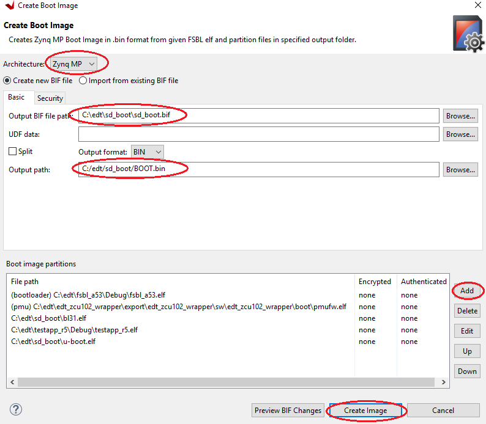
First, add the FSBL partition.
In the Create Boot Image wizard, click Add to open the Add partition view.
In the Add Partition view, click Browse to select the FSBL executable.
For FSBL, ensure that the partition type is selected as boot loader and the correct destination CPU is selected by the tool. The tool is configured to make this selection based on the FSBL executable.
Note: Ignore the Exception Level drop down, as FSBL is set to EL3 by default. Also, leave the TrustZone setting unselected for this example.
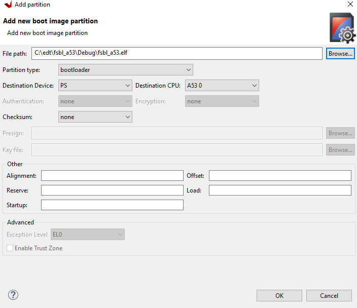
Click OK to select FSBL and go back to Create Boot Image wizard.
Next, add the PMU and ATF firmware partitions.
Click Add to open the Add Partition view, shown in the following figure.
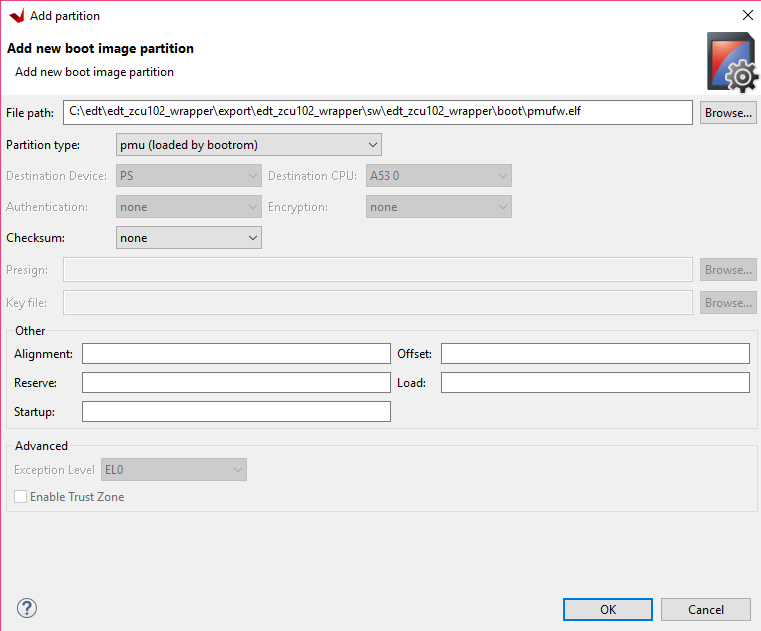
Add the PMU firmware partition.
Browse to and select the PMU Firmware executable.
For this partition, select pmu as the partition type.
Leave the Exception Level and TrustZone settings unselected.
Click OK.
Click Add to open Add Partition view.
Add the ATF firmware
bl31.elfpartition.Note: ATF Firmware (
bl31.elf) can be found in<PetaLinux Project>/image/linux/. Alternatively, you can also usebl31.elffrom Design Files for This Tutorial.For this partition, select datafile as the partition type.
Set the Destination Device as PS.
Set the Destination CPU as A53 0.
Set the Exception Level to EL3 and select Enable TrustZone.
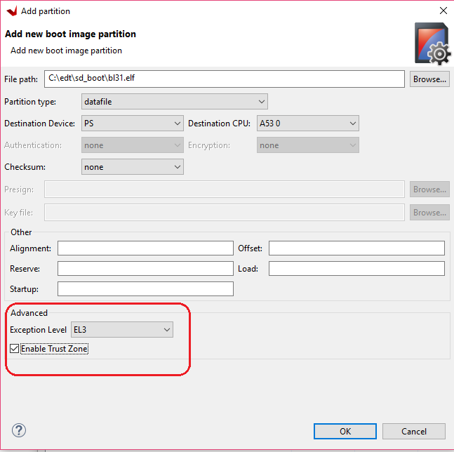
Click OK.
Next, add the R5 executable and enable it in lockstep mode.
Click Add to add the Cortex-R5F bare-metal executable.
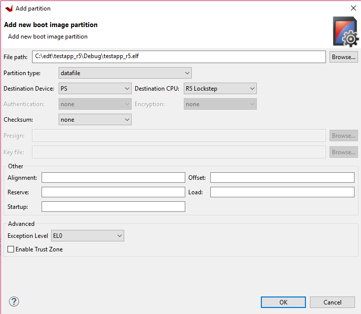
Set the Destination Device as PS.
Set the Destination CPU as R5 Lockstep. This sets the RPU R5 cores to run in Lockstep mode.
Leave Exception Level and TrustZone unselected.
Click OK.
Now, add the U-Boot partition. You can find
u-boot.elffor sd_boot mode in<PetaLinux_project>/images/linux/sd_boot.Click Add to add the u-boot.elf partition.
For U-Boot, select the Destination Device as PS.
Select the Destination CPU as A53 0.
Set the Exception Level to EL2.
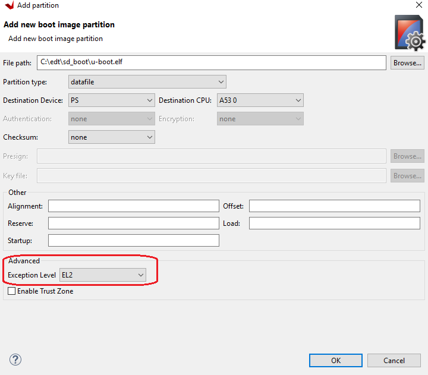
Click OK to return to the Create Boot Image wizard.
Click Create Image to close the wizard and create the boot image.
You can also create BOOT.bin images using the BIF attributes and the
Bootgen command. For this configuration, the BIF file contains
following attributes:
//arch = zynqmp; split = false; format = BIN
the_ROM_image:
{
[bootloader, destination_cpu = a53-0]C:\edt\fsbl_a53\Debug\fsbl_a53.elf
[pmufw_image]C:\edt\edt_zcu102_wrapper\export\edt_zcu102_wrapper\sw\edt_zcu102_wrapper\boot\pmufw.elf
[destination_cpu = a53-0, exception_level = el-3, trustzone]C:\edt\sd_boot\bl31.elf
[destination_cpu = r5-lockstep]C:\edt\testapp_r5\Debug\testapp_r5.elf
[destination_cpu = a53-0, exception_level = el-2]C:\edt\sd_boot\u-boot.elf
}
The Vitis IDE calls the following Bootgen command to generate the BOOT.bin image for this configuration:
bootgen -image sd_boot.bif -arch zynqmp -o C:\edt\sd_boot\BOOT.bin
Running the Image on the ZCU102 Board¶
Copy the
BOOT.bin,image.ub, andboot.scrto the SD card. Hereboot.scris read by U-Boot to load kernel and the root file system.Load the SD card into the ZCU102 board, in the J100 connector.
Connect a micro USB cable from ZCU102 board USB UART port (J83) to the USB port on the host machine.
Configure the board to boot in the SD-boot mode by setting switch SW6 to 1-ON, 2-OFF, 3- OFF, and 4-OFF, as shown in following figure.

Connect 12V Power to the ZCU102 6-Pin Molex connector.
Start a terminal session, using Tera Term or Minicom depending on the host machine being used, as well as the COM port and baud rate for your system, as shown in following figure.

For port settings, verify COM port in device manager. There are four USB-UART interfaces exposed by the ZCU102 board.
Select the COM port associated with the interface with the lowest number. In this case, for UART-0, select the COM port with interface-0.
Similarly, for UART-1, select COM port with interface-1. Remember that the R5 BSP has been configured to use UART-1, and so R5 application messages appear on the COM port with the UART-1 terminal.
Turn on the ZCU102 Board using SW1, and wait until Linux loads on the board. At this point, you can see the initial boot sequence messages on your terminal screen representing UART-0.
You can see that the terminal screen configured for UART-1 also prints a message. This is the print message from the R5 bare-metal application running on RPU, configured to use UART-1 interface. This application is loaded by the FSBL onto RPU.
The bare-metal application has been modified to include the UART interrupt example. This application now waits in the waiting for interrupt (WFI) state until a user input is encountered from the keyboard in UART-1 terminal.
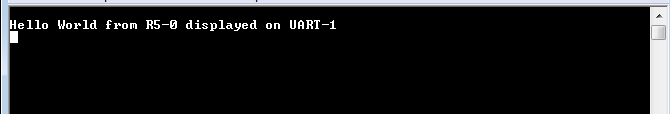
Meanwhile, the boot sequence continues on APU and the images loaded can be understood from the messages appearing on the UART-0 terminal. The messages are highlighted in the following figure.
The U-Boot then loads Linux kernel and other images on Arm Cortex-A53 APU in SMP mode. The terminal messages indicate when the U-Boot loads the kernel image and the kernel start up to getting a user interface prompt in Target Linux OS. The kernel loading and starting sequence can be seen in the following figure.
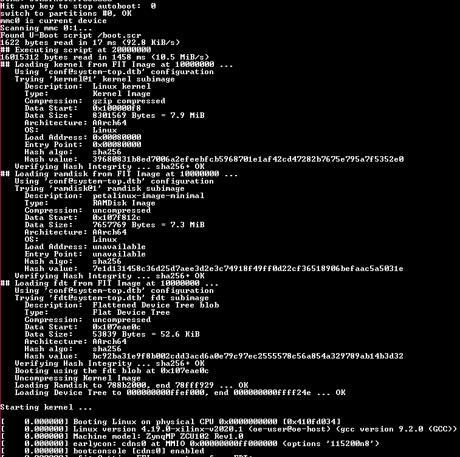
Boot Sequence for QSPI Boot Mode¶
The ZCU102 board also comes with dual parallel QSPI flashes adding up to 128 MB size. In this example, you will create a boot image and load the images on Zynq UltraScale+ in QSPI boot mode. The images can be configured using the Create Boot Image wizard in the Vitis IDE. This can be done by doing the following steps.
Note: This section assumes that you have created PetaLinux Images for QSPI Boot mode by following steps from Create Linux Images Using PetaLinux for QSPI Flash.
If the Vitis IDE is not already running, start it and set the workspace as indicated in Chapter 3: Build Software for PS Subsystems.
Select Xilinx → Create Boot Image.
Select Zynq MP as the Architecture.
Select the Create new BIF file option.
Ensure that the Output format is set to BIN.
In the Basic page, browse to and select the Output BIF file path and output path.
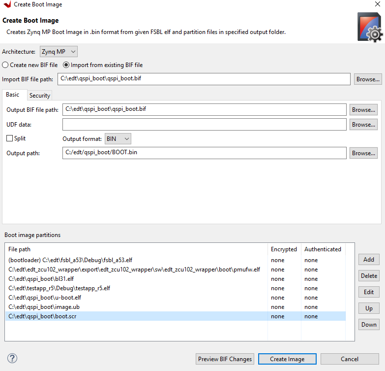
Next, add boot partitions using the following steps:
Click Add to open the Add Partition view.
In the Add Partition view, click the Browse button to select the FSBL executable.
For FSBL, ensure that the Partition type is selected as boot loader and the correct destination CPU is selected by the tool. The tool is configured to make this selection based on the FSBL executable.
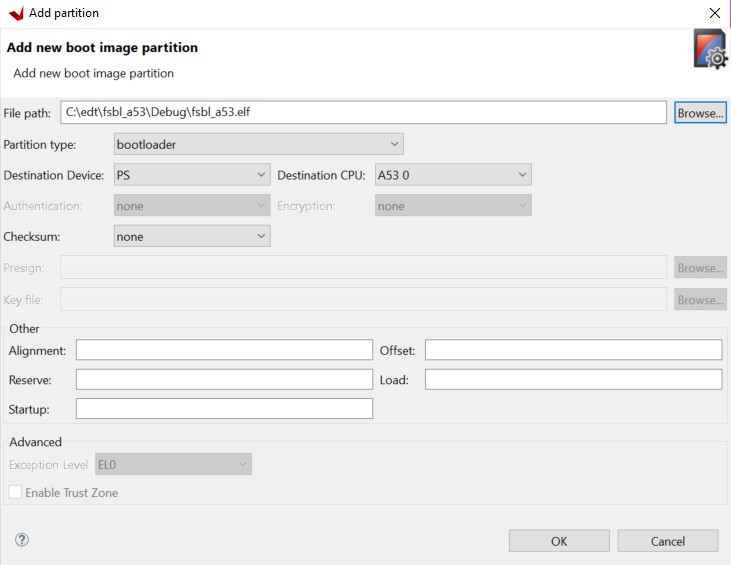
Ignore the Exception Level, as FSBL is set to EL3 by default. Also, leave the TrustZone setting unselected for this example.
Click OK to select the FSBL and go back to the Create Boot Image wizard.
Click Add to open the Add Partition window to add the next partition.
The next partition is the PMU firmware for the Platform Management Unit.
Select the Partition type as datafile and the Destination Device as PS.
Select PMU for Destination CPU.
Click OK.
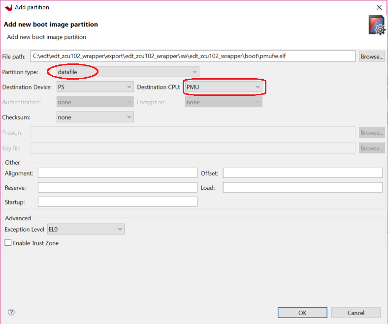
The next partition to be added is the ATF firmware. For this, set the Partition type to datafile.
The ATF executable bl31.elf can be found in the PetaLinux images folder
<PetaLinux_project\/images/linux/.Select the Destination Device as PS and the Destination CPU as A53 0.
Set the Exception Level to EL3 and select Enable TrustZone.
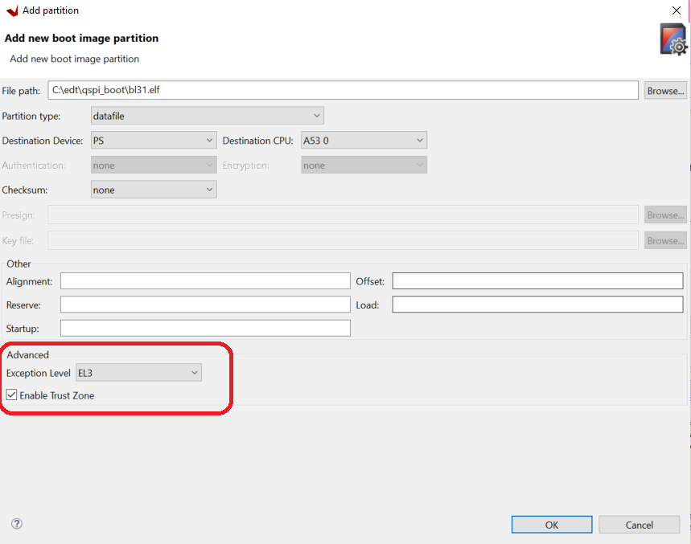
Click OK.
Click Add to add the R5 bare-metal executable.
Add the R5 executable and enable it in lockstep mode, as shown in the following image.
Click OK.
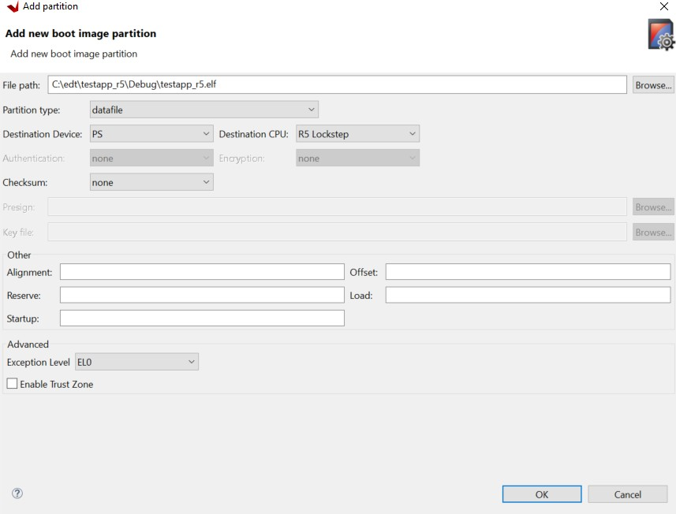
Click Add to add the U-Boot partition. u-boot.elf can be found in
<PetaLinux_Project>/images/linux/.For U-Boot, make the following selections:
Set the Partition Type to datafile.
Set the Destination Device to PS.
Set the Destination CPU to A53 0.
Set the Exception Level to EL2.
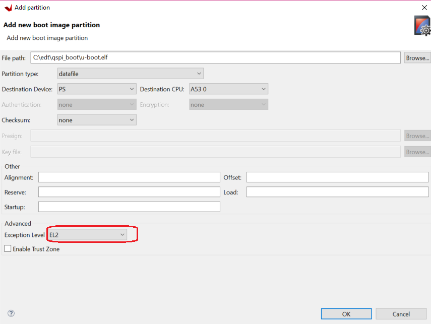
Click OK.
Click Add to add the image.ub Linux image file.
The image.ub image file can be found in PetaLinux project in the
images/Linuxdirectory.For image.ub, make the following selections:
Set Partition Type to datafile.
Set the Destination Device to PS.
Set the Destination CPU to A53 0.
Enter
0xF00000as the offset.Leave Exception Level and TrustZone unselected.
Note: See Create Linux Images Using PetaLinux for QSPI Flash, to understand the offset value.
Click Add to add the
boot.scrscript file.The
boot.scrfile is located in the images/linux directory of the PetaLinux project.For
boot.scr, select the following:Set partition type to datafile.
Set the Destination Device to PS.
Set the Destination CPU to A53 0.
Enter 0x3e80000 as the offset.
Leave Exception Level and TrustZone unselected.
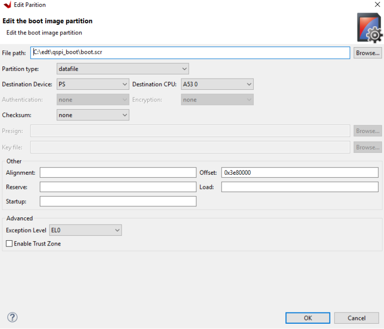
Click OK to go back to Create Boot Image wizard.
Click Create Image to create the
qspi_BOOT.binimage.
You can also create qspi_BOOT.bin images using the BIF attributes and the Bootgen command. You can view the BIF attributes for this configuration by clicking Preview BIF Changes. For this configuration, the BIF file contains following attributes:
//arch = zynqmp; split = false; format = BIN
the_ROM_image:
{
[bootloader, destination_cpu = a53-0]C:\edt\fsbl_a53\Debug\fsbl_a53.elf
[destination_cpu = pmu]C:\edt\edt_zcu102_wrapper\export\edt_zcu102_wrapper\sw\edt_zcu102_wrapper\boot\pmufw.elf
[destination_cpu = a53-0, exception_level = el-3, trustzone]C:\edt\qspi_boot\bl31.elf
[destination_cpu = r5-lockstep]C:\edt\testapp_r5\Debug\testapp_r5.elf
[destination_cpu = a53-0, exception_level = el-2]C:\edt\qspi_boot\u-boot.elf
[offset = 0xF00000, destination_cpu = a53-0]C:\edt\qspi_boot\image.ub
[offset = 0x3e80000, destination_cpu = a53-0]C:\edt\qspi_boot\boot.scr
}
The Vitis IDE calls the following Bootgen command to generate the qspi_BOOT.bin image for this configuration.
bootgen -image qspi_boot.bif -arch zynqmp -o C:\edt\qspi_BOOT.bin
Note: In this boot sequence, the First Stage Boot Loader (FSBL) loads PMU firmware. This is because the PMU firmware was added as a datafile partition type. Ideally, the Boot ROM code can load the PMU Firmware for PMU as witnessed in the earlier section. For more details on PMU Firmware, refer to the “Platform Management” chapter in the Zynq UltraScale+ MPSoC: Software Developers Guide (UG1137).
Running the Image in QSPI Boot Mode on ZCU102 Board¶
To test the image in this example, you will load the Boot image (qspi_BOOT.bin) onto QSPI on the ZCU102 board using the Program Flash utility in the Vitis IDE. Alternately, you can use the XSDB debugger.
In the Vitis IDE, select Xilinx → Program Flash.
In the Program Flash wizard, browse to and select the
qspi_BOOT.binimage file that was created as a part of this example.Select qspi-x8-dual_parallel as the Flash type.
Set the Offset as 0 and select the FSBL ELF file (fsbl_a53.elf)
Ensure that a USB cable is connected between the USB-JTAG connector on ZCU102 target and the USB port on the host machine using the following steps.
Set the SW6 Boot mode switch as shown in the following figure.
Turn on the board.
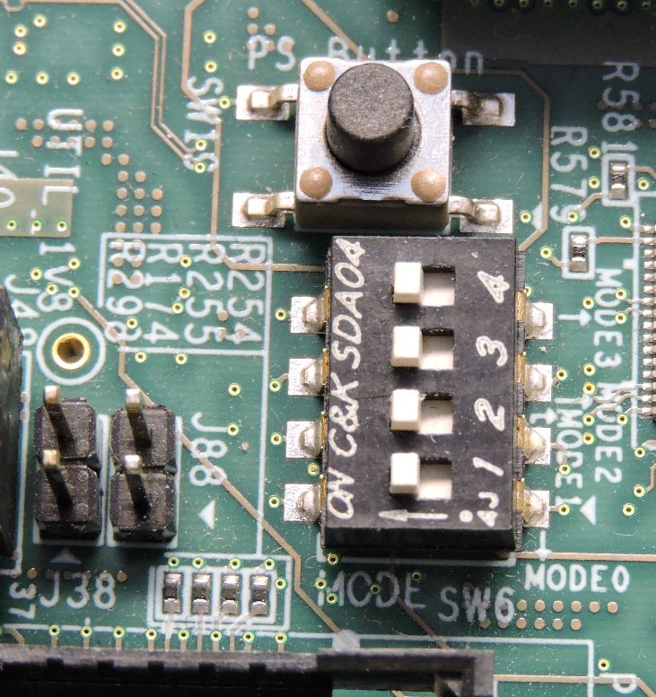
Click Program to start the process of programming the QSPI Flash with the qspi_BOOT.bin
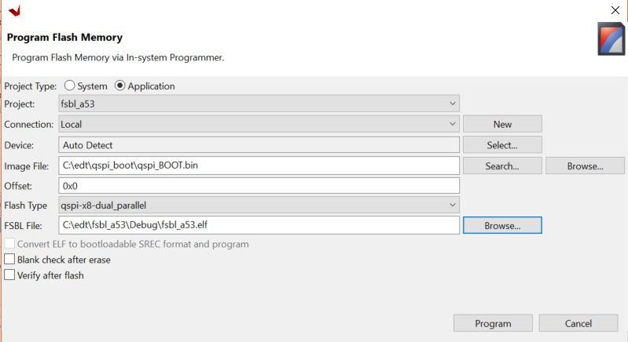
Wait until you see the message “Flash Operation Successful” in the console, as shown in the following image.
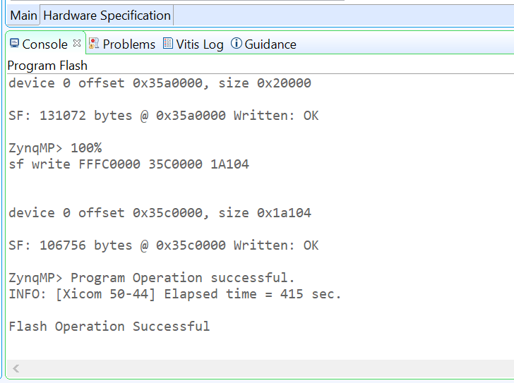
Set Up the ZCU102 Board¶
Connect Board USB-UART on Board to Host machine. Connect the Micro USB cable into the ZCU102 Board Micro USB port J83, and the other end into an open USB port on the host machine.
Configure the Board to Boot in QSPI-Boot mode by switching SW6 as shown in following figure.
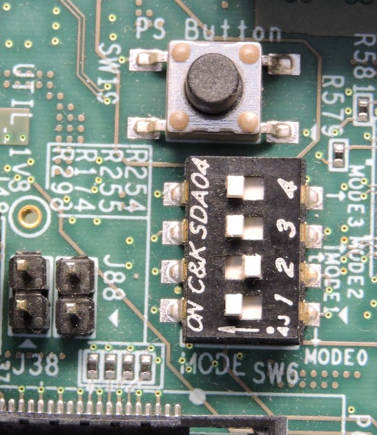
Connect 12V Power to the ZCU102 6-Pin Molex connector.
Start a terminal session, using Tera Term or Mini com, depending on the host machine being used, and the COM port and baud rate as shown in the following figure.
For port settings, verify the COM port in the device manager. There are four USB UART interfaces exposed by the ZCU102.
Select the COM port associated with the interface with the lowest number. In this case, for UART-0, select the COM port with interface-0.
Similarly, for UART-1, select COM port with interface-1.
Remember, R5 BSP has been configured to use UART-1, so R5 application messages will appear on the COM port with UART-1 terminal.
Turn on the ZCU102 Board using SW1.
At this point, you can see initial Boot sequence messages on your Terminal Screen representing UART-0.
You can see that the terminal screen configured for UART-1 also prints a message. This is the print message from the R-5 bare-metal Application running on RPU, configured to use
UART-1 interface. This application is loaded by the FSBL onto RPU.
The bare-metal application has been modified to include the UART interrupt example. This application now waits in the WFI state until a user input is encountered from the keyboard in UART-1 terminal.
Meanwhile, the boot sequence continues on APU and the images loaded can be understood from the messages appearing on the UART-0 terminal. The messages are highlighted in the following figure.
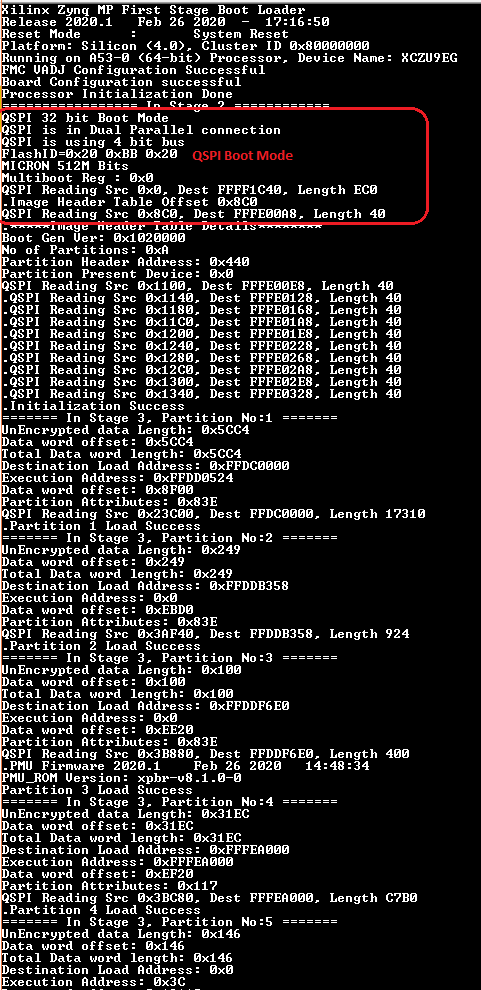
The U-Boot then loads Linux Kernel and other images on Arm Cortex-A53 APU in SMP mode. The terminal messages indicate when U-Boot loads Kernel image and the kernel start up to getting a user interface prompt in Linux Kernel. The Kernel loading and starting sequence can be seen in following figure.
Boot Sequence for QSPI-Boot Mode Using JTAG¶
Zynq UltraScale+ MPSoC supports many methods to load the boot image.
One way is using the JTAG interface. This example XSCT session
demonstrates how to download a boot image file (qspi_BOOT.bin) in QSPI
using the XSDB debugger. After the QSPI is loaded, the qspi_BOOT.bin
image executes in the same way as QSPI boot mode in Zynq UltraScale+ MPSoC. You can use the same XSCT session or the System Debugger for debugging similar boot flows.
The following sections demonstrate the basic steps involved in this boot mode.
Setting Up the Target¶
Connect a USB cable between the USB-JTAG J2 connector on the target and the USB port on the host machine.
Set the board to JTAG Boot mode by setting the SW6 switch, as shown in the following figure.
Power on the board using switch SW1. Open the XSCT console in the Vitis IDE by clicking the XSCT button. Alternatively, you can also open the XSCT console by selecting Xilinx → XSCT Console.
In the XSCT console, connect to the target over JTAG using the connect command:
xsct% connectThe connect command returns the channel ID of the connection.
The targets command lists the available targets and allows you to select a target using its ID. The targets are assigned IDs as they are discovered on the JTAG chain, so the IDs can change from session to session.
Note: For non-interactive usage such as scripting, you can use the -filter option to select a target instead of selecting the target using its ID.
xsct% targetsThe targets are listed as shown in the following figure.
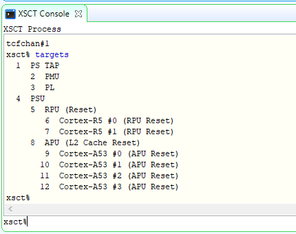
Load U-Boot Using XSCT/XSDB¶
Download the U-Boot application on Cortex-A53 #0 using the following commands:
By default, JTAG Security gates are enabled. Disable the security gates for DAP, PL TAP, and PMU (this will make PMU MB target visible to Debugger).
xsct% targets -set -filter {name =~ "PSU"} xsct% mwr 0xffca0038 0x1ff xsct% targets
Verify if the PMU MB target is listed under the PMU device. Now, load and run PMU Firmware.
Now, reset APU Cortex-A53 Core 0 to load and run FSBL.
xsct% targets -set -filter {name =~ "Cortex-A53 #0"} xsct% rst -processor
Note:
rst -processorclears the reset on an individual processor core.This step is important, because when Zynq UltraScale+ MPSoC boots up in JTAG boot mode, all the APU and RPU cores are held in reset. You must clear resets on each core before performing debugging on these cores. You can use therst command in XSCT to clear the resets.
Note:
rst -coresclears resets on all the processor cores in the group (such as APU or RPU) of which the current target is a child. For example, when A53 #0 is the current target,rst -coresclears resets on all the Cortex-A53 cores in APU.Load and run FSBL.
xsct% dow {C:\edt\fsbl_a53\Debug\fsbl_a53.elf} xsct% con
Verify FSBL messages on Serial Terminal and stop FSBL after couple of seconds.
xsct% stopLoad and run ATF.
xsct% dow {C:\edt\qspi_boot\bl31.elf} xsct% con xsct% stop
Configure a serial terminal (Tera Term, Mini com, or the Serial Terminal interface for UART-0 USB-serial connection).
For serial terminal settings, see the following figure.
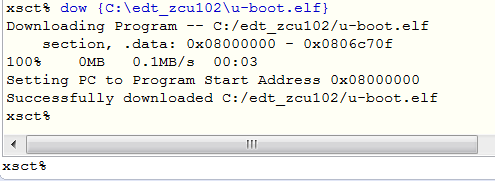
Load and run U-Boot.
xsct% dow {C:\edt\qspi_boot\u-boot.elf}Run U-Boot, using the con command in XSDB.
xsct% conIn the target serial terminal, press any key to stop the U-Boot auto boot.
Stop the core using the stop command in XSDB.
xsct% stop
Load Boot.bin in DDR Using XSDB¶
Download the Boot.bin binary into DDR on ZCU102. Use the same Boot.bin created for QSPI boot mode.
xsct% dow -data {C:\edt\qspi_boot\qspi_BOOT.bin} 0x2000000Now continue the U-Boot again, using the con command in XSDB.
xsct% con
Load the Boot.bin Image in QSPI Using U-Boot¶
Execute the following commands in the U-Boot console on the target terminal. These commands erase QSPI and then write the Boot.bin image from DDR to QSPI.
ZynqMP> sf probe 0 0 0 ZynqMP> sf erase 0 0x4000000 ZynqMP> sf write 0x2000000 0 0x4000000
After successfully writing the image to QSPI, turn off the board and set up the ZCU102 board as described in Set Up the ZCU102 Board.
You can see Linux loading on the UART-0 terminal and the R5 application executing in the UART-1 terminal.
This chapter focused mostly on system boot and different components related to system boot. In the next chapter, you will focus on applications, Linux, and Standalone (bare-metal) applications which will make use of PS peripherals, PL IPs, and processing power of APU Cores and RPU cores.
Boot Sequence for USB Boot Mode¶
Zynq UltraScale+ MPSoC also supports USB Slave Boot Mode. This is using the USB DFU Device Firmware Upgrade (DFU) Device Class Specification of USB. Using a standard update utility such as OpenMoko’s DFU-Util, you will be able to load the newly created image on
Zynq UltraScale+ MPSoC using the USB Port. The following steps list the required configuration to load boot images using this boot mode. The DFU Utility is also shipped with the Vitis unified software platform and PetaLinux.
Configure FSBL to Enable USB Boot Mode¶
There are few changes required in FSBL to enable USB Boot Mode. USB boot mode support increases the footprint of FSBL (by approximately 10 KB). Because it is intended mostly during the initial development phase, its support is disabled by default to conserve OCM space. In this section, you will modify the FSBL to enable the USB Boot Mode. Considering the FSBL project is used extensively throughout this tutorial, do not modify the existing FSBL project. Instead, this section will make use of new FSBL project.
Create First Stage Boot Loader for USB Boot¶
In the Vitis IDE, select File→ New → Application Project to open the New Project wizard.
Use the information in the table below to make your selections in the wizard.
Table 9: Wizard Properties and Commands
| Wizard Screen | System Properties | Settings |
|---|---|---|
| Platform | Select platform from repository | edt_zcu102_wrapper |
| Application project details | Application project name | fsbl_usb_boot |
| System project name | fsbl_usb_boot_system | |
| Target processor | psu_cortexa53_0 | |
| Domain | Domain | standalone on psu_cortexa53_0 |
| Templates | Available templates | Zynq MP FSBL |
Click Finish.
In the Explorer view, expand the fsbl_usb_boot project and open
xfsbl_config.hfrom fsbl_usb_boot→ src→xfsbl_config.h.In
xfsbl_config.hchange or set following settings:#define FSBL_QSPI_EXCLUDE_VAL (1U) #define FSBL_SD_EXCLUDE_VAL (1U) #define FSBL_USB_EXCLUDE_VAL (0U)
Use CTRL + S to save these changes.
Build FSBL (fsbl_usb_boot).
Creating Boot Images for USB Boot¶
In this section, you will create the Boot Images to be loaded, via USB using DFU utility. Device firmware upgrade (DFU) is intended to download and upload firmware to/from devices connected over USB. In this boot mode, the boot loader (FSBL) and the PMU firmware which are loaded by bootROM are copied to Zynq UltraScale+ on-chip memory (OCM) from the host machine USB port using DFU Utility. The size of OCM (256 KB) limits the size of boot image downloaded by bootROM in USB boot mode. Considering this, and subject to size requirement being met, only FSBL and PMU firmware are stitched into the first boot.bin, which is copied to OCM. The remaining boot partitions will be stitched in another boot image and copied to DDR to be loaded by the FSBL which is already loaded and running at this stage. Follow these steps to create boot images for this boot mode.
In the Vitis IDE, select Xilinx → Create Boot Image.
Select
fsbl_usb_boot.elfandpmufw.elfpartitions and set them as shown in the following figure.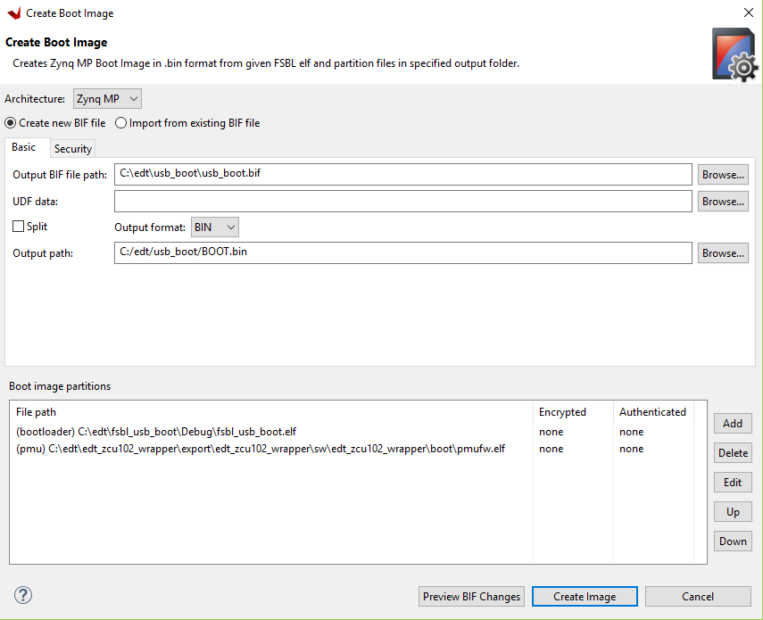
Ensure that PMU partition is set to be loaded by bootROM.
Click Create Image to generate BOOT.bin.
Modifying PetaLinux U-Boot¶
Modify PetaLinux U-Boot so that it can load the image.ub image. The
device tree needs to be modified to set USB in the Peripheral mode.
The default PetaLinux configuration is set for the USB in host mode.
Follow these steps to modify system-user.dtsi in the PetaLinux project
<PetaLinux-project>/project-spec/meta-user/recipes-bsp/device-tree/ files/system-user.dtsi.
Add the following to system-user.dtsi, so that it looks like:
/include/ "system-conf.dtsi" / { gpio-keys { sw19 { status = "disabled"; }; }; }; &uart1 { status = "disabled"; }; &dwc3_0 { dr_mode = "peripheral"; maximum-speed = "super-speed"; };
The modified system-user.dtsi file can be found in
<Design Files>/usb_bootreleased with the tutorial.Build PetaLinux with the following changes.
$ petalinux-build
The following steps describe how to create a usb_boot.bin comprising rest of the partitions.
Note: Copy the newly generated U-Boot to
C:\edt\usb_boot\. Theu-boot.elfis also available in Design Files for This Tutorial.
In the Vitis IDE, select Xilinx → Create Boot Image.
Select FSBL and rest of the partitions and set them as shown in the following figure. You can also choose to import the BIF file from the SD boot sequence.
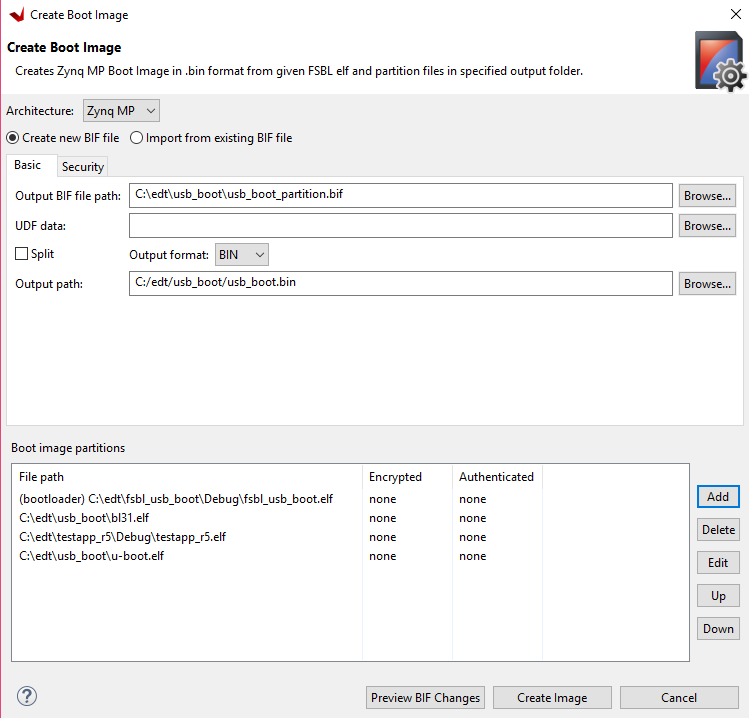
Note: Ensure that you have set the correct exception levels for ATF (EL-3, TrustZone) and U-Boot (EL-2) partitions. These settings can be ignored for other partitions.
The PMU firmware partition is not required in this image, as it will be loaded by the bootROM before this image (
usb_boot.bin) is loaded.Click on Create Image to generate
usb_boot.bin.Note: In addition to
BOOT.binandusb_boot.bin, the Linux image like image.ub is required to boot till Linux. Thisimage.ubis loaded by the DFU utility separately.
Boot using USB Boot¶
In this section you will load the boot images on ZCU102 target using DFU utility. Before you start, set the board connections as shown below:
Set ZCU102 for USB Boot mode by setting SW6 (1-OFF, 2-OFF, 3-OFF, and 4-ON), as shown below:
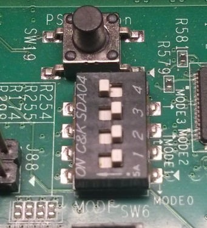
Connect a USB 3.0 Cable to J96 USB 3 ULPI Connector, and the other end of the Cable to USB port on the host machine.
Connect a USB Micro cable between USB-UART port on Board (J83) and the host machine.
Start a terminal session, using Tera Term or Minicom depending on the host machine being used, as well as the COM port and baud rate for your system, as shown in Figure 5-31.
Power ON the board.
The following steps will load the boot images via USB using DFU
utility, which can be found in VITIS\2019.1\tps\lnx64\dfu-util-0.9.
Alternatively you can also install DFU utility on the Linux using Package Manager supported by Linux Distribution.
Boot Commands for Linux Host Machine¶
Check if the DFU can detect the USB target.
$ sudo dfu-util -lThe USB device should be enumerated with VendorId: ProductId which is
03fd:0050. You should see something like the following message:name="Xilinx DFU Downloader", serial="2A49876D9CC1AA4"
Note: If you do not see the ‘Found DFU’ message, verify the connection and retry.
Now download the BOOT.bin that was created in Creating Boot Images for USB Boot.
$ sudo dfu-util -d 03fd:0050 -D <USB_Boot_Image_Path>/Boot.binVerify from Serial Terminal if the FSBL is loaded successfully.
Now download the usb_boot.bin. Before this, start another terminal session for UART-1 serial console.
$ sudo dfu-util -d 03fd:0050 -D <USB_Boot_Image_Path>/usb_boot.binCheck UART 0 terminal and wait until U-Boot loads.
On U-Boot prompt, type Enter to terminate autoboot. Verify from the UART1 console that the R5 application is also loaded successfully.
Run the following commands to setup the dfu environment in the U-Boot command line:
$ setenv loadaddr 0x10000000 $ setenv kernel_addr 0x10000000 $ setenv kernel_size 0x1e00000 $ setenv dfu_ram_info "setenv dfu_alt_info image.ub ram $kernel_addr $kernel_size"
In U-Boot console start DFU_RAM to enable downloading Linux Images
U-boot\ run dfu_ramDownload the Linux image Image.ub using the following command from the host machine terminal:
$ sudo dfu-util -d 03fd:0300 -D <PetaLinux_project>/images/linux/image.ub -a 0Now execute CTRL+C on U-Boot console to stop dfu_ram.
Run bootm command from the U-Boot console.
U-boot\ bootmVerify that Linux loads successfully on the target.
Note: In this example, image.ub is copied to DDR location based on #define DFU_ALT_INFO_RAM settings in U-Boot configuration. The same can be modified to copy other image files to DDR location. Then, if required, these images can be copied to QSPI using U-Boot commands listed in Boot Sequence for QSPI-Boot Mode Using JTAG.
Boot Commands for Windows Host Machine¶
In the Vitis IDE, Select Xilinx → Launch Shell.
In shell, check if the DFU can detect the USB target:
> dfu-util.exe -lNote:
dfu-util.execan be found in<VITIS_Installation_path>\VITIS\2020.1\tps\Win64\dfu-util-0.9\dfu-util.exeThe USB device should be enumerated with VendorId: ProductId which is
03fd:0050.Note: If you do not see the message starting with “Found DFU”, download and install “zadig” software. Open the software and click Options and select List all devices. Select device Xilinx Dfu Downloader and click Install driver.
Now download the Boot.bin that was created in Creating Boot Images for USB Boot.
$ dfu-util.exe -d 03fd:0050 -D BOOT.binVerify from Serial Terminal (UART 0) that FSBL is loaded successfully.
Now download the usb_boot.bin. Before this start another terminal session for UART-1 serial console.
$ dfu-util.exe -d 03fd:0050 -D usb_boot.binOn U-Boot prompt type Enter to terminate auto-boot. Verify from UART1 console that the R5 application is also loaded successfully.
Note: At this point, use Zadig utility to install drivers for “USB download gadget” with device ID 03fd:0300. Without this, zadig software does not show “Xilinx DFU Downloader” after booting U-Boot on target.
Run the following commands to setup the dfu environment in U-Boot command line:
$ setenv loadaddr 0x10000000 $ setenv kernel_addr 0x10000000 $ setenv kernel_size 0x1e00000 $ setenv dfu_ram_info "setenv dfu_alt_info image.ub ram $kernel_addr $kernel_size"
In U-Boot console, start DFU_RAM to enable downloading Linux Images:
U-boot\ run dfu_ramDownload Linux image image.ub using the following command from the host machine terminal:
$ dfu-util.exe -d 03fd:0300 -D image.ub -a 0Run bootm command from the U-Boot console.
U-boot\ bootmVerify that Linux loads successfully on the target.
Secure Boot Sequence¶
The secure boot functionality in Zynq UltraScale+ MPSoC allows you to support confidentiality, integrity, and authentication of partitions. Secure boot is accomplished by combining the Hardware Root of Trust (HROT) capabilities of the Zynq UltraScale+ device with the option of encrypting all boot partitions. The HROT is based on the RSA-4096 asymmetric algorithm with SHA-3/384, which is hardware accelerated. Confidentiality is provided using 256-bit Advanced Encryption Standard Galois Counter Mode (AES-GCM). This section focuses on how to use and implement the following:
Hardware Root of Trust with Key Revocation
Partition Encryption with Differential Power Analysis (DPA) Countermeasures
Black Key Storage using the Physically Unclonable Function (PUF)
The section Secure Boot System Design Decisions outlines high level secure boot decisions which should be made early in design development. The Hardware Root of Trust section discusses the use of a Root of Trust (RoT) in boot. The Boot Image Confidentiality and DPA section discusses methods to use AES encryption.
The Boot Image Confidentiality and DPA section discusses the use of the operational key and key rolling techniques as countermeasures to a DPA attack. Changing the AES key reduces the exposure of both the key and the data protected by the key.
A red key is a key in unencrypted format. The Black Key Storage section provides a method for storing the AES key in encrypted, or black format. Black key store uses the physically unclonable function (PUF) as a Key Encryption Key (KEK).
The Practical Methods in Secure Boot section provides steps to develop and test systems that use AES encryption and RSA authentication.
Secure Boot System Design Decisions¶
The following are device level decisions affecting secure boot:
Boot mode
AES key storage location
AES storage state (encrypted or unencrypted)
Encryption and authentication requirements
Key provisioning
The boot modes which support secure boot are Quad Serial Peripheral Interface (QSPI), SD, eMMC, USB Boot, and NAND. The AES key is stored in either eFUSEs (encrypted or unencrypted), Battery Backed Random Access Memory (BBRAM) (unencrypted only), or in external NVM (encrypted only).
In Zynq UltraScale+ MPSoC, partitions can be encrypted and/or authenticated on a partition basis. Xilinx generally recommends that all partitions be RSA authenticated. Partitions that are open source (U-Boot, Linux), or do not contain any proprietary or confidential information, typically do not need to be encrypted. In systems in which there are multiple sources/suppliers of sensitive data and/or proprietary IP, encrypting the partitions using unique keys may be important.
DPA resistance requirements are dictated by whether the adversary has physical access to the device.
The following table can be a good reference while deciding on features required to meet a specific secure system requirement. Next sections will discuss the features in more detail.
Table 10: System Level Security Requirements
| System Consideration/ | Zynq UltraScale+ Feature |
|---|---|
| Ensure that only the users software and hardware runs on the device | HWROT |
| Guarantee that the users software and hardware are not modified | HWROT |
| Ensure that an adversary cannot clone or reverse engineer software/hardware | Boot Image Confidentiality |
| Protect sensitive data and proprietary Intellectual Property (IP) | Boot Image Confidentiality |
| Ensure that Private Key (AES key) is protected against side channel attacks | DPA Protections |
| Private/Secret keys (AES key) is stored encrypted at rest | Black Key Storage |
Hardware Root of Trust¶
Root of trusts are security primitives for storage (RTS), integrity (RTI), verification (RTV), measurement (RTM), and reporting (RTR). RoT consists of hardware, firmware, and software. The HROT has advantages over software RoTs because the HROT is immutable, has a smaller attack surface, and the behavior is more reliable.
The HROT is based on the CSU, eFUSEs, BBRAM, and isolation elements. The HROT is responsible for validating that the operating environment and configuration have not been modified. The RoT acts as an anchor for boot, so an adversary can not insert malicious code before detection mechanisms start.
Firmware and software run on the HROT during boot. Zynq UltraScale+ provides immutable bootROM code, a first stage boot loader, device drivers, and the XILSKEY and XILSECURE libraries which run on the HROT. These provide a well-tested, proven in use API so that developers do not create security components from scratch with limited testing.
Data Integrity¶
Data integrity is the absence of corruption of hardware, firmware and software. Data integrity functions verify that an adversary has not tampered with the configuration and operating environment.
Zynq UltraScale+ verifies the integrity of partition(s) using both symmetric key (AES-GCM) and asymmetric key (RSA) authentication. RSA uses a private/public key pair. The fielded embedded system only has the public key. Theft of the public key is of limited value since it is not possible, with current technology, to derive the private key from the public key.
Encrypted partitions are also authenticated using the Galois Counter Mode (GCM) mode of AES. In the secure boot flow, partitions are first authenticated and then decrypted if necessary.
Authentication¶
The following figure shows RSA signing and verification of partitions. From a secure facility, the Bootgen tool signs partitions, using the private key. In the device, the ROM verifies the FSBL and either the FSBL or U-Boot verifies the subsequent partitions, using the public key.
Primary and secondary private/public key pairs are used. The function of the primary private/ public key pair is to authenticate the secondary private/public key pair. The function of the secondary key is to sign/verify partitions.
Figure 4: Zynq UltraScale+ RSA Authentication
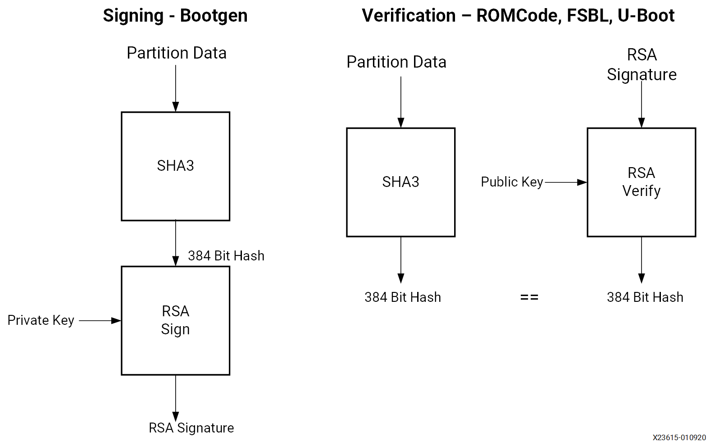
To sign a partition, Bootgen first calculates the SHA3 of the partition data. The 384-bit hash is then RSA signed using the private key. The resulting RSA signature is placed in the authentication certificate. In the image, each signed partition has partition data followed by an authentication certificate which includes the RSA signature.
Verification of the FSBL is handled by the CSU ROM code. To verify the subsequent partitions, the FSBL or U-Boot uses the XILSECURE library.
There is a debug mode for authentication called bootheader authentication. In this mode of authentication, the CSU ROM code does not check the primary public key digests, the session key ID or the key revocation bits stored in the device eFUSEs. Therefore, this mode is not secure. However, it is useful for testing and debugging as it does not require programming of eFUSEs.
This tutorial uses this mode. However, fielded systems should not use boot header authentication. The example BIF file for a fully secured system is included at the end of this section.
Boot Image Confidentiality and DPA¶
AES is used to ensure confidentiality of sensitive data and IP. Zynq UltraScale+ uses AES Galois Counter Mode (GCM). Zynq UltraScale+ uses a 256 AES bit key. The principle AES enhancements provided by Zynq UltraScale+ are increased resistance to Differential Power Analysis (DPA) attacks and the availability of AES encryption/decryption post boot.
Bootgen and FSBL software support AES encryption. Private keys are used in AES encryption, and AES encryption is done by Bootgen using the key files. The key files can be generated by Bootgen or OpenSSL. The use of the operational key limits the exposure of the device key. The use of the operational key in key rolling is discussed in the next section. To maintain Boot image confidentiality, Encrypted Boot images can be created using Bootgen. Software examples to program keys to BBRAM and eFUSE are also available in the Vitis IDE. One such example is discussed in Practical Methods in Secure Boot.
DPA Protections¶
Key rolling is used for DPA resistance. Key rolling and black key store can be used in the same design. In key rolling, software and bitstream is broken up into multiple data blocks, each encrypted with a unique AES key. The initial key is stored in BBRAM or eFUSE NVM. Keys for successive data blocks are encrypted in the previous data block. After the initial key, the key update register is used as the key source.
A 96-bit initialization vector is included in the NKY key file. The IV uses 96 bits to initialize AES counters. When key rolling is used, a 128-bit IV is provided in the bootheader. The 32 least significant bits define the block size of data to decrypt using the current key. The block sizes following the initial block defined in the IV are defined as attributes in the Bootgen Image Format (BIF) file.
An efficient method of key rolling uses the operational key. With the operational key, Bootgen creates an encrypted secure header with the user specified operational key and the first block IV. The AES key in eFUSE or BBRAM is used only to decrypt the 384-bit secure header with the 256-bit operational key. This limits the exposure of the device key to DPA attacks.
Black Key Storage¶
The PUF enables storing the AES key in encrypted (black) format. The black key can be stored either in eFUSEs or in the bootheader. When needed for decryption, the encrypted key in eFUSEs or the bootheader is decrypted using the PUF generated key encrypting key (KEK).
There are two steps in using the PUF for black key storage. In the first, PUF registration software is used to generate PUF helper data and the PUF KEK. The PUF registration data allows the PUF to re-generate the identical key each time the PUF generates the KEK. For more details on the use of PUF registration software, see PUF Registration in Bootheader Mode. For more information on PUF Registration - eFUSE mode, see Programming BBRAM and eFUSEs (XAPP1319).
The helper data and encrypted user key must both be stored in eFUSEs if the PUF eFUSE mode is used, and in the bootheader if the PUF Bootheader mode is used. The procedure for the PUF bootheader mode is discussed in Using PUF in Bootheader Mode. For the procedure to use PUF in eFUSE mode, see Programming BBRAM and eFUSEs (XAPP1319).
This tutorial uses PUF bootheader mode as it does not require programming of eFUSEs, and is therefore useful for test and debug. However, the most common mode is PUF eFUSE mode, as the PUB Bootheader mode requires a unique run of bootgen for each and every device. The example BIF file for a fully secured system is included at the end of the Secure Boot Sequence section demonstrates the PUF eFUSE mode.
Practical Methods in Secure Boot¶
This section outlines the steps to develop secure boot in a Zynq UltraScale+ system. Producing a secure embedded system is a two-step process. In the first phase, the cryptographic keys are generated and programmed into NVM. In the second phase, the secure system is developed and tested. Both steps use the Vitis IDE to create software projects, generate the image, and program the image. For the second phase, a test system can be as simple as fsbl.elf and hello.elf files. In this section, you will use the same images used in Boot Sequence for SD-Boot, but this time the images will be assembled together, and have the secure attributes enabled as part of the secure boot sequence.
This section starts by showing how to generate AES and RSA keys. Following key generation, systems using the advanced AES and RSA methods are developed and tested. Keys generated in this section are also included in the Design Files for This Tutorial, released with this tutorial.
The methods used to develop AES functionality are provided in the following sections:
AES key in eFUSE
Creating RSA Private/Public Key Pairs provides the steps to authenticate all partitions loaded at boot. This section also shows how to revoke keys.
A requirement in the development of a secure system is to add security attributes which are used in image generation. Bootgen generates a Boot Image Format (BIF) file. The BIF file is a text file. In its simplest form, the BIF is a list of partitions to be loaded at boot. Security attributes are added to the BIF to specify cryptographic functionality. In most cases, the Bootgen GUI (Create Boot Image wizard) is used to generate the BIF file. In some cases, adding security attributes requires editing the Bootgen generated BIF file. In Create Boot Image Wizard in the Vitis IDE, after the Security tab is selected, the Authentication and Encryption tabs are used to specify security attributes.
After implementing AES and RSA cryptography in secure boot, a boot test is done. The system loads successfully and displays the FSBL messages on the terminal. These messages indicate the cryptographic operations performed on each partition. Appendix A: Debugging Problems with Secure Boot provides steps that are required to use, if the secure boot test fails.
Sample Design Overview¶
The sample design demonstrates loading various types of images into the device. It includes loading a FSBL, PMU Firmware, U-Boot, Linux, RPU software and a PL configuration image. In this sample, all of these images are loaded by the FSBL which performs all authentication and decryption. This is not the only means of booting a system. However, it is the simple and secure method, as of 2019.1.
Figure 5: Sample Design Overview
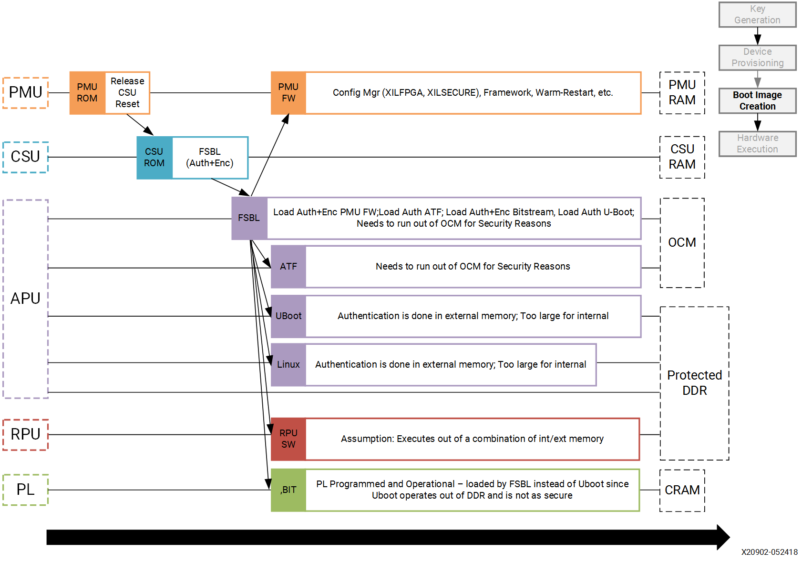
Different sections within the boot image have different levels of security and are loaded into different locations. The following table explains the contents of the final boot image.
Table 11: Final Boot Image with Secure Attributes
| Binary | RSA Authenticated | AES Encrypted | Exception Level | Loader |
|---|---|---|---|---|
| FSBL | Yes | Yes | EL3 | CSU ROM |
| PMU Firmware | Yes | Yes | NA | FSBL |
| PL Bitstream | Yes | Yes | NA | FSBL |
| Arm Trusted Firmware (ATF) | Yes | No | EL3 | FSBL |
| R5 Software | Yes | Yes | NA | FSBL |
| U-Boot | Yes | No | EL2 | FSBL |
| Linux | Yes | No | EL1 | FSBL |
Notes:
In a secure boot sequence, the PMU image is loaded by the FSBL. Using the bootROM/CSU to load the PMU firmware introduces a security weakness as the key/IV combination is used twice. First to decrypt the FSBL and then again to decrypt the PMU image. This is not allowed for the secure systems.
As of 2019.1, U-Boot does not perform a secure authenticated loading of Linux. So instead of U-Boot, FSBL loads the Linux images to memory address and then uses U-Boot to jump to that memory address.
This tutorial demonstrates assembling the binaries that are created using Chapter 6: System Design Examples in a boot image with all the security features enabled. This section also shows how PL bitstream can be added as a part of secure boot flow. Follow Chapter 6: System Design Examples till Modifying the Build Settings to create all the necessary files and then switch back.
Enabling the security features in boot image is done in two different methods. During the first method, the BIF file is manually created using a text editor and then using that BIF file to have Bootgen create keys. This enables you to identify the sections of the BIF file that are enabled which security features. The second method uses the Create Boot Image wizard in the Vitis IDE. It demonstrates the same set of security features and reuses the keys from the first method for convenience.
Generating Keys for Authentication¶
There are multiple methods of generating keys. These include, but are not limited to, using bootgen, customized key files, OpenSSL and Hardware Security Modules (HSMs). This tutorial covers methods using bootgen. The bootgen created files can be used as templates for creating files containing user-specified keys from the other key sources.
The creation of keys using bootgen commands requires the generation and modification of the BIF files. The key generation section of this tutorial creates these bif files “by hand” using a text editor. The next section, building your boot image demonstrates how to create these BIF files using the Bootgen GUI (create Boot Image Wizard).
Creating RSA Private/Public Key Pairs¶
For this example, you will create the primary and secondary keys in the PEM format. The keys are generated using Bootgen command-line options. Alternately, you can create the keys using external tools like OpenSSL.
The following steps describe the process of creating the RSA private/public key pairs:
Launch the shell from the Vitis IDE.
Select Xilinx → Vitis Shell.
Create a file named
key_generation.bif.Note: The
key_generation.biffile will be used to create both the asymmetric keys in these steps and the symmetric keys in later steps.the_ROM_image: { [pskfile]psk0.pem [sskfile]ssk0.pem [auth_params]spk_id = 0; ppk_select = 0 [fsbl_config]a53_x64 [bootloader]fsbl_a53.elf [destination_cpu = pmu]pmufw.elf [destination_device = pl]edt_zcu102_wrapper.bit [destination_cpu = a53-0, exception_level = el-3, trustzone] bl31.elf [destination_cpu = r5-0]tmr_psled_r5.elf [destination_cpu = a53-0, exception_level = el-2]u-boot.elf [load = 0x1000000, destination_cpu = a53-0]image.ub }
Save the
key_generation.biffile in the C:\edt\secure_boot_sd\keys directory.Copy all of the ELF, BIF and UB files built in Chapter 6: System Design Examples to
C:\edt\secure_boot_sd\keys directory.Navigate to the folder containing the BIF file.
cd C:\edt\secure_boot_sd\keysRun the following command to generate the keys:
bootgen -p zu9eg -arch zynqmp -generate_keys auth pem -image key_generation.bifVerify that the files
psk0.pemandssk0.pemare generated at the location specified in the BIF file (c:\edt\secure_boot_sd\keys).
Generate SHA3 of Public Key in RSA Private/Public Key Pair¶
The following steps are required only for RSA Authentication with eFUSE mode, and can be skipped for RSA authentication with bootheader mode. The 384 bits from sha3.txt can be programmed to eFUSE for RSA Authentication with the eFUSE Mode. For more information, see Programming BBRAM and eFUSEs (XAPP1319).
Perform the steps from the prior section.
Now that the PEM files have been defined, add authentication = rsa attributes as shown below to
key_generation.bif.the_ROM_image: { [pskfile]psk0.pem [sskfile]ssk0.pem [auth_params]spk_id = 0; ppk_select = 0 [fsbl_config]a53_x64 [bootloader, authentication = rsa]fsbl_a53.elf [destination_cpu = pmu, authentication = rsa]pmufw.elf [destination_device = pl, authentication = rsa]edt_zcu102_wrapper.bit [destination_cpu = a53-0, exception_level = el-3, trustzone, authentication = rsa]bl31.elf [destination_cpu = r5-0, authentication = rsa]tmr_psled_r5.elf [destination_cpu = a53-0, exception_level = el-2, authentication = rsa]uboot. elf [load = 0x1000000, destination_cpu = a53-0, authentication = rsa]image.ub }
Use the bootgen command to calculate the hash of the PPK:
bootgen -p zcu9eg -arch zynqmp -efuseppkbits ppk0_digest.txt -image key_generation.bifVerify that the file
ppk0_digest.txtis generated at the location specified (c:\edt\secure_boot_sd\keys).
Additional RSA Private/Public Key Pairs¶
The steps in this section to generate Secondary RSA Private/Public key pair required for key revocation, which requires programming of eFUSE. For more information, see Programming BBRAM and eFUSEs (XAPP1319). You can skip this section if you do not intend to use Key Revocation.
Repeat steps from Creating RSA Private/Public Key Pairs and Generate SHA3 of Public Key in RSA Private/Public Key Pair to generate the second RSA private/public key pair and generate the SHA3 of the second PPK.
Perform the steps from the prior section but with replacing
psk0.pem,ssk0.pem, andppk0_digest.txtwithpsk1.pem,ssk1.pem, andppk1_digest.pemrespectively. Save this file askey_generation_1.bif. That .bif file will look like:the_ROM_image: { [pskfile]psk1.pem [sskfile]ssk1.pem [auth_params]spk_id = 1; ppk_select = 1 [fsbl_config]a53_x64 [bootloader]fsbl_a53.elf [destination_cpu = pmu]pmufw.elf [destination_device = pl]edt_zcu102_wrapper.bit [destination_cpu = a53-0, exception_level = el-3, trustzone]bl31.elf [destination_cpu = r5-0]tmr_psled_r5.elf [destination_cpu = a53-0, exception_level = el-2]u-boot.elf [load = 0x1000000, destination_cpu = a53-0]image.ub }
Run the bootgen command to create the RSA private/public key pairs.
bootgen -p zu9eg -arch zynqmp -generate_keys auth pem -image key_generation_1.bifAdd authentication = rsa attributes to the
key_generation_1.biffile. The .bif file will look like:the_ROM_image: { [pskfile]psk1.pem [sskfile]ssk1.pem [auth_params]spk_id = 1; ppk_select = 1 [fsbl_config]a53_x64 [bootloader, authentication = rsa]fsbl_a53.elf [destination_cpu = pmu, authentication = rsa]pmufw.elf [destination_device = pl, authentication = rsa]edt_zcu102_wrapper.bit [destination_cpu = a53-0, exception_level = el-3, trustzone, authentication = rsa]bl31.elf [destination_cpu = r5-0, authentication = rsa]tmr_psled_r5.elf [destination_cpu = a53-0, exception_level = el-2, authentication = rsa]uboot. elf [load = 0x1000000, destination_cpu = a53-0, authentication = rsa]image.ub }
Run the bootgen command to generate the hash of the primary RSA public key.
bootgen -p zcu9eg -arch zynqmp -efuseppkbits ppk1_digest.txt -image key_generation_1.bifVerify that the files
ppk1.pem,spk1.pem, andppk1_digest.txtare all generated at the location specified (c:\edt\secure_boot\keys).
Enabling Boot Header Authentication¶
Boot header authentication is a mode of authentication that instructs the ROM to skip the checks of the eFUSE hashes for the PPKs, the revocation status of the PPKs and the Session IDs for the secondary keys. This mode is useful for testing and debugging as it does not require programming of eFUSEs. This mode can be permanently disabled for a device by programming the RSA_EN eFUSEs which forces RSA Authentication with the eFUSE checks. Fielded systems should use the RSA_EN eFUSE to force the eFUSE checks and disable Boot Header Authentication.
Add the bh_auth_enable attribute to the [fsbl_config] line so that
the bif file appears as following:
the_ROM_image:
{
[pskfile]psk0.pem [sskfile]ssk0.pem
[auth_params]spk_id = 0; ppk_select = 0 [fsbl_config]a53_x64,
bh_auth_enable [bootloader, authentication = rsa]fsbl_a53.elf
[destination_cpu = pmu, authentication = rsa]pmufw.elf [destination_device
= pl, authentication = rsa]edt_zcu102_wrapper.bit
[destination_cpu = a53-0, exception_level = el-3, trustzone, authentication
= rsa]bl31.elf
[destination_cpu = r5-0, authentication = rsa]tmr_psled_r5.elf
[destination_cpu = a53-0, exception_level = el-2, authentication = rsa]uboot.
elf [load = 0x1000000, destination_cpu = a53-0, authentication =
rsa]image.ub
}
Generating Keys for Confidentiality¶
Image confidentiality is discussed in Boot Image Confidentiality and DPA section. In this section you will modify the .bif file from the authentication section by adding the attributes required to enable image confidentiality, using the AES-256-GCM encryption algorithm. At the end, a bootgen command will be used to create all of the required AES-256 keys.
Using AES Encryption¶
Enable image confidentiality by specifying the key source for the initial encryption key (bbram_red_key for now) using the [keysrc_encryption]
bbram_red_keyattribute.On several of the partitions enable confidentiality by adding the encryption = aes attribute of the partitions. Also specify a unique key file for each partition. Having a unique key file for each partition allows each partition to use a unique set of keys which increases security strength by not reusing keys and reducing the amount of information encrypted on any one key. The
key_generation.biffile should now look as follows:``` the_ROM_image: { [pskfile]psk0.pem [sskfile]ssk0.pem [auth_params]spk_id = 0; ppk_select = 0 [keysrc_encryption]bbram_red_key [fsbl_config]a53_x64, bh_auth_enable [bootloader, authentication = rsa, encryption = aes, aeskeyfile = fsbl_a53.nky]fsbl_a53.elf [destination_cpu = pmu, authentication = rsa, encryption = aes, aeskeyfile = pmufw.nky]pmufw.elf [destination_device = pl, authentication = rsa, encryption = aes, aeskeyfile = edt_zcu102_wrapper.nky]edt_zcu102_wrapper.bit [destination_cpu = a53-0, exception_level = el-3, trustzone, authentication = rsa]bl31.elf [destination_cpu = r5-0, authentication = rsa, encryption = aes,aeskeyfile = tmr_psled_r5.nky]tmr_psled_r5.elf [destination_cpu = a53-0, exception_level = el-2, authentication = rsa]uboot.elf [load = 0x1000000, destination_cpu = a53-0, authentication = rsa]image.ub } ```
Enabling DPA Protections¶
This section provides the steps to use an operational key and key rolling effective countermeasures against the differential power analysis (DPA).
Enable Use of an Operational Key¶
Use of an operational key limits the amount of information encrypted using the device key. Enable use of the operational key by adding the opt_key attribute to the [fsbl_config] line of the bif file. The key_generation.bif file should now look like as shown below:
{
[pskfile]psk0.pem [sskfile]ssk0.pem
[auth_params]spk_id = 0; ppk_select = 0 [keysrc_encryption]bbram_red_key
[fsbl_config]a53_x64, bh_auth_enable, opt_key
[bootloader, authentication = rsa, encryption = aes, aeskeyfile = fsbl_a53.nky]fsbl_a53.elf
[destination_cpu = pmu, authentication = rsa, encryption = aes, aeskeyfile = pmufw.nky]pmufw.elf
[destination_device = pl, authentication = rsa, encryption = aes, aeskeyfile = edt_zcu102_wrapper.nky]edt_zcu102_wrapper.bit
[destination_cpu = a53-0, exception_level = el-3, trustzone, authentication = rsa]bl31.elf
[destination_cpu = r5-0, authentication = rsa, encryption = aes, aeskeyfile = tmr_psled_r5.nky]tmr_psled_r5.elf
[destination_cpu = a53-0, exception_level = el-2, authentication = rsa]uboot.elf
[load = 0x1000000, destination_cpu = a53-0, authentication = rsa]image.ub
}
Enabling Encryption Using Key Rolling¶
Use of key rolling limits the amount of information encrypted using any of the other keys. Key- rolling is enabled on a partition-by-partition basis using the blocks attribute in the bif file. The blocks attribute allows specifying the amount of information in bytes to encrypt with each key. For example, blocks=4096,1024(3),512(*) would use the first key for 4096 bytes, the second through fourth keys for 1024 bytes and all remaining keys for 512 bytes. In this example, the block command will be used to limit the life of each key to 1728 bytes.
Enable use of the key rolling by adding the blocks attribute to each of the encrypted partitions. The key_generation.bif file should now look as showbn below:
the_ROM_image:
{
[pskfile]psk0.pem
[sskfile]ssk0.pem
[auth_params]spk_id = 0; ppk_select = 0
[keysrc_encryption]bbram_red_key
[fsbl_config]a53_x64, bh_auth_enable, opt_key
[bootloader, authentication = rsa, encryption = aes, aeskeyfile = fsbl_a53.nky, blocks = 1728(*)]fsbl_a53.elf
[destination_cpu = pmu, authentication = rsa, encryption = aes,aeskeyfile = pmufw.nky, blocks = 1728(*)]pmufw.elf
[destination_device = pl, authentication = rsa, encryption = aes,aeskeyfile = edt_zcu102_wrapper.nky, blocks = 1728(*)]edt_zcu102_wrapper.bit
[destination_cpu = a53-0, exception_level = el-3, trustzone, authentication = rsa]bl31.elf
[destination_cpu = r5-0, authentication = rsa, encryption = aes, aeskeyfile = tmr_psled_r5.nky, blocks = 1728(*)]tmr_psled_r5.elf
[destination_cpu = a53-0, exception_level = el-2, authentication = rsa]uboot.elf
[load = 0x1000000, destination_cpu = a53-0, authentication = rsa]image.ub
}
Generating All of the AES Keys¶
Once all desired encryption features have been enabled, you can
generate all key files by running Bootgen. Some of the source files
(for example, ELF) contain multiple sections. These individual
sections will be mapped to separate partitions, and each partition
will have a unique key file. In this case, the key file will be
appended with a “.1.”. For example, if the pmu_fw.elf file contains
multiple sections, both a pmu_fw.nky and a pmu_fw.1.nky file will be
generated.
Create all of the necessary NKY files by running the bootgen command that creates the final
BOOT.binimage.bootgen -p zcu9eg -arch zynqmp -image key_generation.bifVerify that the NKY files were generated. These file should include:
edt_zcu102_wrapper.nky, fsbl_a53.nky, pmu_fw.nky, pmu_fw.1.nky, pmu_fw.2.nky, tmr_psled_r5.nky, and tmr_psled_r5.1.nky.
Using Key Revocation¶
Key revocation allows you to revoke a RSA primary or secondary public key. Key revocation may be used due to elapsed time of key use or if there is an indication that the key is compromised. The primary and secondary key revocation is controlled by onetime programmable eFUSEs. The Xilinx Secure Key Library is used for key revocation, allowing key revocation in fielded devices. Key revocation is discussed further in Zynq UltraScale+ Device Technical Reference Manual (UG1085)
Using the PUF¶
In this section, the PUF is used for black key storage in the PUF Bootheader mode. RSA authentication is required when the PUF is used. In PUF Bootheader mode, the PUF helper data and the encrypted user’s AES key are stored in the Bootheader. This section shows how to create a BIF for using the PUF. Because the helper data and encrypted user key will be unique for each and every board, the bootgen image created will only work on the board from which the helper data originated.
At the end of the Secure Boot Sequence section, a different BIF file demonstrates using the PUF in eFUSE mode. In PUF eFUSe mode, the PUF helper data and encrypted user’s AES key are stored in eFUSEs. In PUF eFUSE mode, a single boot image can be used across all boards.
PUF Registration in Bootheader Mode¶
The PUF registration software is included in the XILSKEY library. The PUF registration software operates in a bootheader mode or eFUSE mode. The bootheader mode allows development without programming the OTP eFUSEs. The eFUSE mode is used in production. This lab runs through PUF registration in bootheader mode only. For PUF registration using eFUSE, see Programming BBRAM and eFUSEs (XAPP1319).
The PUF registration software accepts a red (unencrypted) key as input, and produces syndrome data (helper data), which also contains CHASH and AUX, and a black (encrypted) key. When the PUF bootheader mode is used, the output is put in the bootheader. When the PUF eFUSE mode is used, the output is programmed into eFUSEs.
In the Vitis IDE, navigate to tmr_psled_r5 Board Support Package Settings.
Ensure that xilskey and the xilsecure libraries are enabled.
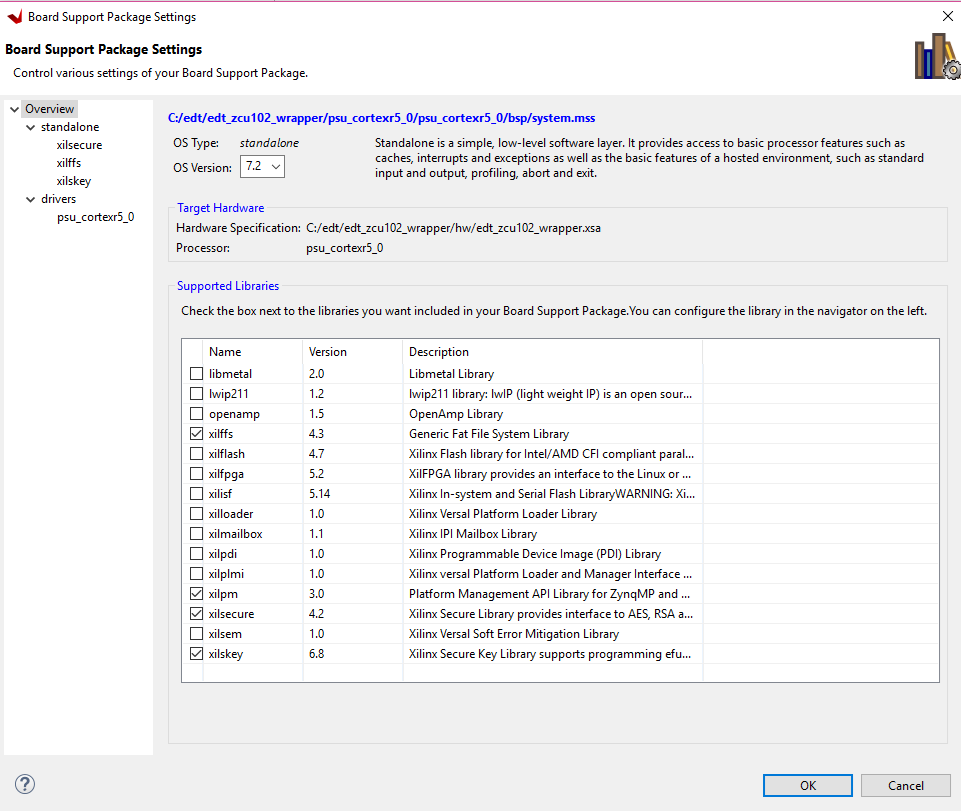
Click OK. Re-build the hardware platform for changes to apply. Navigate to tmr_psled_r5_bsp settings.
Scroll to the Libraries section. Click xilskey 6.8 Import Examples.
In the view, select xilskey_puf_registration example. Click OK.
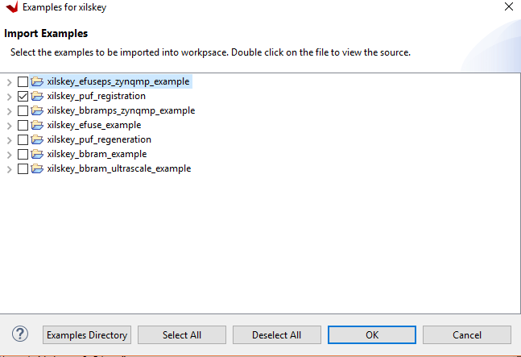
In the Project Explorer view, verify that the xilskey_puf_example_1 application is created.
In the Project Explorer view, xilskey_puf_example_1 ‘Src’, double-click xilskey_puf_registration.h to open in the Vitis IDE.
Edit xilskey_puf_registration.h as follows:
Change #define XSK_PUF_INFO_ON_UART from FALSE to TRUE.
Ensure that #define XSK_PUF_PROGRAM_EFUSE is set to FALSE.
Set XSK_PUF_AES_KEY (256-bit key).
The key is to be entered in HEX format and should be Key 0 from the fsbl_a53.nky file that you generated in Generating All of the AES Keys. You can find a sample key below:
#define XSK_PUF_AES_KEY "68D58595279ED1481C674383583C1D98DA816202A57E7FE4F67859CB069CD510"
Note: Do not copy this key. Refer to the fsbl_a53.nky file for your key.
Set the XSK_PUF_BLACK_KEY_IV. The initialization vector IV is a 12-byte data of your choice.
#define XSK_PUF_BLACK_KEY_IV \"E1757A6E6DD1CC9F733BED31\"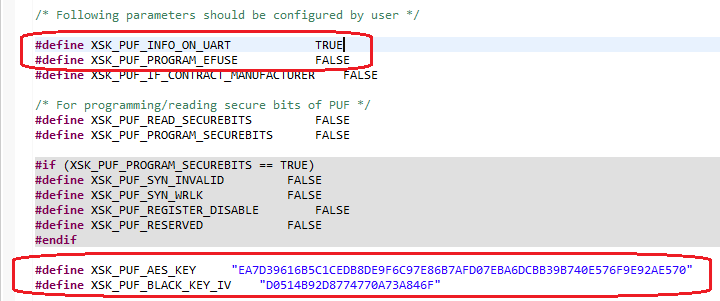
Save the file and exit.
In the Project Explorer view, right-click the xilskey_puf_example_1 project and select Build Project.
In the Vitis IDE, select Xilinx → Create Boot Image.
Select Zynq MP in the Architecture view.
Specify the bif path in the Output BIF file path view as
C:\edt\secureboot_sd\puf_registration\puf_registration.bif.Specify the output path in the Output Path view as
C:\edt\secureboot_sd\puf_registration\BOOT.bin.In the Boot Image Partitions pane, click Add. Add the partitions and set the destination CPU of the xilskey_puf_example_1 application to R5-0:
C:\edt\fsbl_a53\Debug\fsbl_a53.elf C:\edt\xilskey_puf_example_1\Debug\xilskey_puf_example_1.elf
Click Create Image to create the boot image for PUF registration.
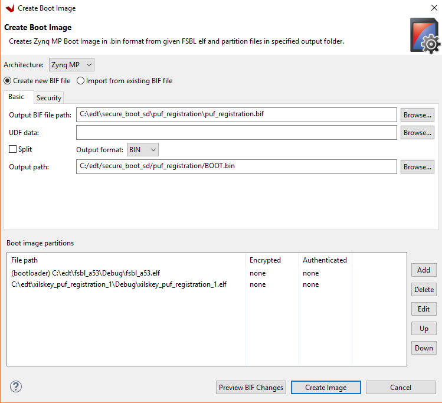
Insert an SD card into the PC SD card slot.
Copy
C:\edt\secureboot_sd\puf_registration\BOOT.binto the SD card.Move the SD card from the PC SD card slot to the ZCU102 card slot.
Start a terminal session using Tera Term or Minicom depending on the host machine being used, as well as the COM port and baud rate for your system, as shown in .
In the communication terminal menu bar, select File→ Log. Enter
C:\edt\secureboot_sd\puf_registration\puf_registration.login the view.Power cycle the board.
After the puf_registration software has run, exit the communication terminal.
The
puf_registration.logfile is used in Using PUF in Bootheader Mode. Openpuf_registration.login a text editor.Save the PUF Syndrome data that starts after App PUF Syndrome data Start!!! and ends at PUF Syndrome data End!!!, non-inclusive, to a file named
helperdata.txt.Save the black key IV identified by App: Black Key IV to a file named
black_iv.txt.Save the black key to a file named
black_key.txt.The files
helperdata.txt,black_key.txt, andblack_iv.txtcan be saved inC:\edt\secure_boot_sd\keys.
Using PUF in Bootheader Mode¶
The following steps describes the process to update the .bif file from the previous sections to include using the PUF in Boot Header mode. This section will make use of the Syndrome data and Black Key created during PUF registration process.
Enable use of the PUF by adding all of the fields and attributes indicated in bold to the bif file (
key_generation.bif) shown below.the_ROM_image: { [pskfile]psk0.pem [sskfile]ssk0.pem [auth_params]spk_id = 0; ppk_select = 0 [keysrc_encryption]bh_blk_key [bh_key_iv]black_iv.txt [bh_keyfile]black_key.txt [puf_file]helperdata.txt [fsbl_config]a53_x64, bh_auth_enable, opt_key, puf4kmode, shutter=0x0100005E,pufhd_bh [bootloader, authentication = rsa, encryption = aes, aeskeyfile = fsbl_a53.nky, blocks = 1728(*)]fsbl_a53.elf [destination_cpu = pmu, authentication = rsa, encryption = aes, aeskeyfile = pmufw.nky, blocks = 1728(*)]pmufw.elf [destination_device = pl, authentication = rsa, encryption = aes, aeskeyfile = edt_zcu102_wrapper.nky, blocks = 1728(*)]edt_zcu102_wrapper.bit [destination_cpu = a53-0, exception_level = el-3, trustzone, authentication = rsa]bl31.elf [destination_cpu = r5-0, authentication = rsa, encryption = aes, aeskeyfile = tmr_psled_r5.nky, blocks =1728(*)]tmr_psled_r5.elf [destination_cpu = a53-0, exception_level = el-2, authentication = rsa]uboot.elf [load = 0x1000000, destination_cpu = a53-0, authentication = rsa]image.ub }
The above .bif file can be used for creating a final boot image using an AES key encrypted in the boot image header with the PUF KEK. This would be done using the following bootgen command.
bootgen -p zcu9eg -arch zynqmp -image key_generation.bif -w -o BOOT.bin
Note: The above steps can also be executed with PUF in eFUSE mode. In this case you can repeat the previous steps, using the PUF in eFUSE mode. This requires enabling the programming of eFUSEs during PUF registration by setting the XSK_PUF_PROGRAM_EFUSE macro in the xilskey_puf_registration.h file used to build the PUF registration application. Also, the BIF would need to be modified to use the encryption key from eFUSE and removing the helper data and black key files. PUF in eFUSE mode is not covered in this tutorial to avoid programming the eFUSEs on development or tutorial systems.
[keysrc_encryption]efuse_blk_key
[bh_key_iv]black_iv.txt
System Example Using the Vitis IDE Create Boot Image Wizard¶
The prior sections enabled the various security features (authentication, confidentiality, DPA protections, and black key storage) by hand editing the BIF file. This section performs the same operations, but uses the Bootgen Wizard as a starting point. The Bootgen Wizard creates a base BIF file, and then adds the additional security features that are not supported by the wizard using a text editor.
Change directory to the bootgen_files directory.
cd C:\edt\secure_boot_sd\bootgen_filesCopy the below data from the prior example to this example.
cp ../keys/*nky . cp ../keys/*pem . cp ../keys/black_iv.txt . cp ../keys/helperdata.txt . cp ../keys/*.elf . cp ../keys/edt_zcu102_wrapper.bit . cp ../keys/image.ub . cp ../keys/black_key.txt.
Click Programs→ Xilinx Design Tools → Vitis 2020.1 → Xilinx Vitis 2020.1 to launch the Vitis IDE.
Click Xilinx Tools → Create Boot Image from the menu bar to launch the Create Boot Image wizard.
Select Zynq MP as the Architecture.
Enter the Output BIF file path as
C:\edt\secure_boot_sd\bootgen_files\design_bh_bkey_keyrolling.bif.Select BIN as the output format.
Enter the output path
C:\edt\secure_boot_sd\bootgen_files\BOOT.bin.Enable authentication.
Click the Security page.
Check the Use Authentication check box.
Browse to select the
psk0.pemfile for the PSK and thessk0.pemfor the SSK.Ensure PPK select is 0.
Enter SPK ID as 0.
Check the Use BH Auth check box.
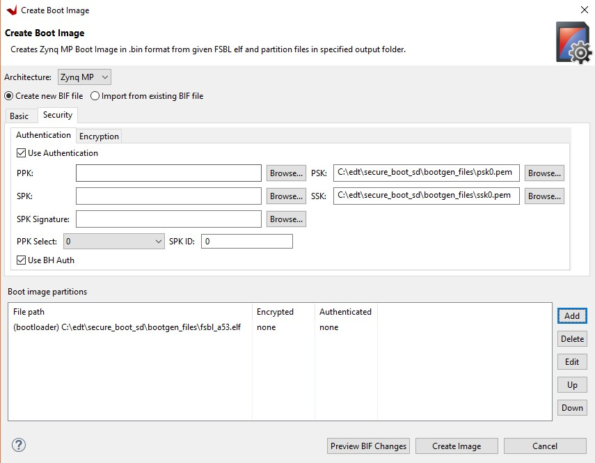
Enable encryption.
Click the Encryption page.
Check the Use Encryption check box.
Provide the part name as zcu9eg.
Check the Operational Key check box.
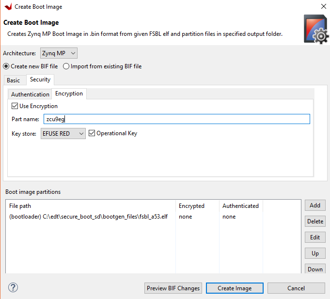
Click the Basic page.
Add the FSBL binary to the boot image.
Click Add.
Use the browse button to select the fsbl_a53.elf file.
Make sure the partition-type is bootloader and the destination CPU is a53x64.
Change authentication to RSA
Change encryption to AES.
Browse the fsbl_a53.nky file that was generated earlier and add the Key file.
Click OK.
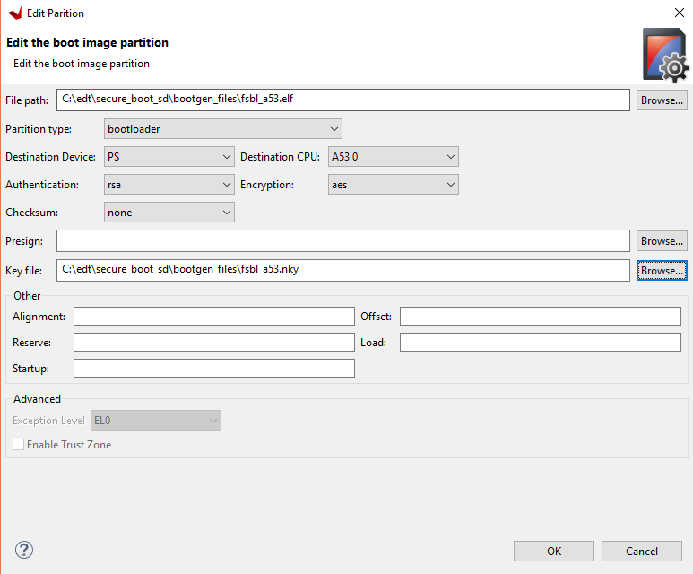
Add the PMU firmware binary to the boot image.
Click Add.
Use the browse button to select the pmufw.elf file.
Make sure the partition-type is datafile.
Change the destination CPU to PMU.
Change authentication to RSA.
Change encryption to AES.
Add pmufw.nky file as the key file.
Click OK.
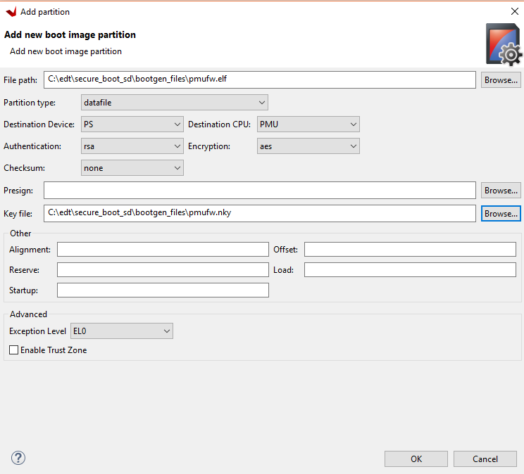
Add the PL Bitstream to the boot image.
Click the Add.
Use the browse button to select the edt_zcu102_wrapper.bit file.
Make sure the partition-type is datafile.
Make sure the destination device is PL.
Change authentication to RSA.
Change encryption to AES.
Add edt_zcu102_wrapper.bit file in the key file.
Click OK.
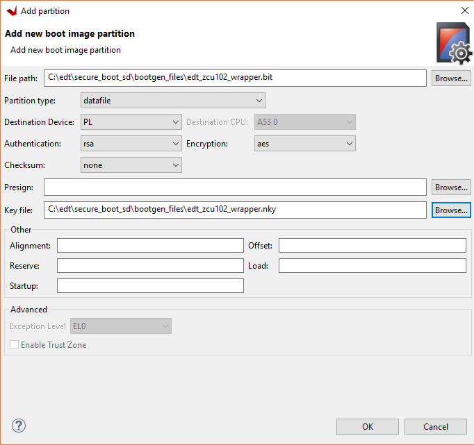
Add the Arm Trusted Firmware (ATF) binary to the image.
Click Add.
Use the browse button to select the bl31.elf file.
Make sure the partition-type is datafile.
Make sure the destination CPU is A53 0.
Change authentication to RSA.
Make sure the encryption is none.
Make sure the Exception Level is EL3 and enable TrustZone.
Click OK.
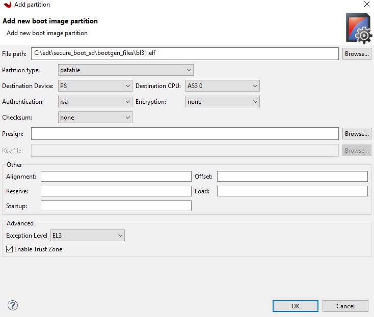
Add the R5 software binary to the boot image.
Click Add.
Use the browse button to select the
tmr_psled_r5.elffileMake sure the partition-type is datafile.
Make sure the destination CPU is R5 0.
Change authentication to RSA.
Change encryption to AES.
Add the
tmr_psled_r5.nkyfile in the key file.Click OK.
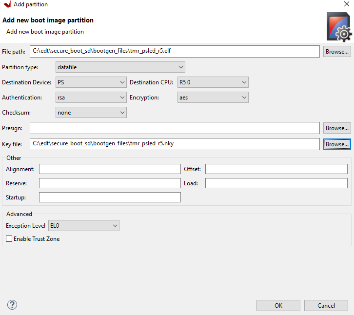
Add the U-Boot software binary to the boot image.
a. Click Add.
b. Use the browse button to select the u-boot.elf file.
c. Make sure the partition-type is datafile.
d. Make sure the destination CPU is A53 0.
e. Change authentication to RSA.
f. Make sure that encryption is none.
g. Change the Exception Level to EL2.
h. Click OK.

Add the Linux image to the boot image.
Click Add.
Use the browse button to select the
image.ubfile.Make sure the partition-type is datafile.
Make sure the destination CPU is A53 0.
Change authentication to RSA.
Make sure that encryption is none.
Update the load field to
0x2000000.Click OK.
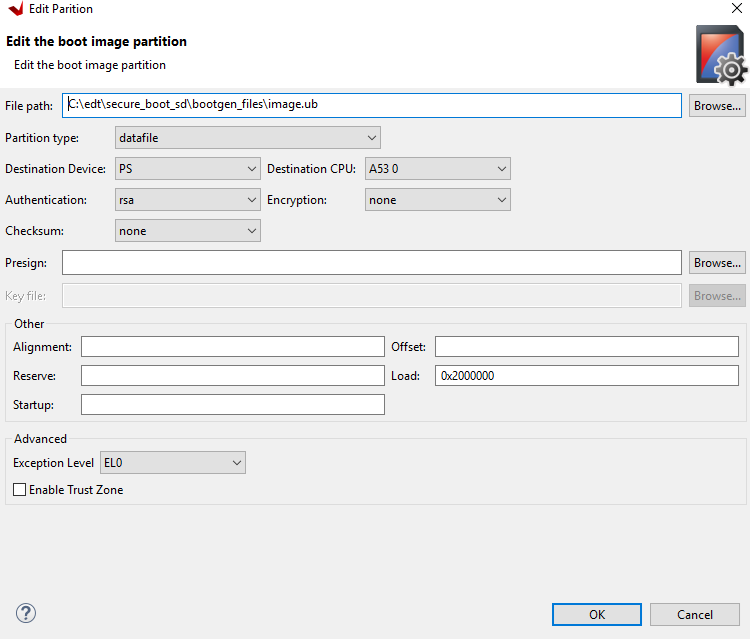
Click Create image.
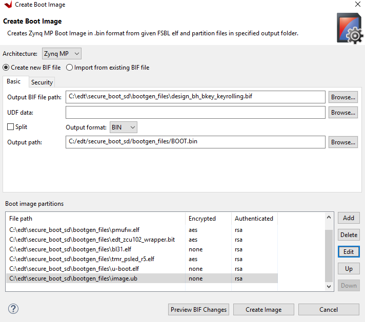
The
design_bh_bkey_keyrolling.biffile should look similar to the following://arch = zynqmp; split = false; format = BIN; key_part_name = zcu9eg the_ROM_image: { [pskfile]C:\edt\secure_boot_sd\bootgen_files\psk0.pem [sskfile]C:\edt\secure_boot_sd\bootgen_files\ssk0.pem [auth_params]spk_id = 0; ppk_select = 0 [keysrc_encryption]efuse_red_key [fsbl_config]bh_auth_enable, opt_key [bootloader, encryption = aes, authentication = rsa, aeskeyfile = C:\edt\secure_boot_sd\bootgen_files\fsbl_a53.nky]C:\edt\secure_boot_sd \bootgen_files\fsbl_a53.elf [encryption = aes, authentication = rsa, aeskeyfile = C:\edt\secure_boot_sd\bootgen_files\pmufw.nky, destination_cpu = pmu]C:\edt\secure_boot_sd\bootgen_files\pmufw.elf [encryption = aes, authentication = rsa, aeskeyfile = C:\edt\secure_boot_sd\bootgen_files\edt_zcu102_wrapper.nky, destination_device = pl]C:\edt\secure_boot_sd\bootgen_files\edt_zcu102_wrapper.bit [authentication = rsa, destination_cpu = a53-0, exception_level = el-3, trustzone]C:\edt\secure_boot_sd\bootgen_files\bl31.elf [encryption = aes, authentication = rsa, aeskeyfile = C:\edt\secure_boot_sd\bootgen_files\tmr_psled_r5.nky, destination_cpu = r5-0]C:\edt\secure_boot_sd\bootgen_files\tmr_psled_r5.elf [authentication = rsa, destination_cpu = a53-0, exception_level = el-2]C:\edt\secure_boot_sd\bootgen_files\u-boot.elf [authentication = rsa, load = 0x2000000, destination_cpu = a53-0]C:\edt\secure_boot_sd\bootgen_files\image.ub }
This BIF file is still missing several security features that are not supported by the Create Boot Image wizard. These are features are key rolling and black key store.
Add black key store by changing the keysrc_encryption and adding the other additional items so that the BIF file looks like the following:
the_ROM_image: { [pskfile]C:\edt\secure_boot_sd\bootgen_files\psk0.pem [sskfile]C:\edt\secure_boot_sd\bootgen_files\ssk0.pem [auth_params]spk_id = 0; ppk_select = 0 [keysrc_encryption]bh_blk_key [bh_key_iv]black_iv.txt [bh_keyfile]black_key.txt [puf_file]helperdata.txt [fsbl_config]a53_x64, bh_auth_enable, opt_key,puf4kmode,shutter=0x0100005E,pufhd_bh [bootloader, encryption = aes, authentication = rsa, aeskeyfile = C:\edt\secure_boot_sd\bootgen_files\fsbl_a53.nky]C:\edt\secure_boot_sd \bootgen_files\fsbl_a53.elf [encryption = aes, authentication = rsa, aeskeyfile = C:\edt\secure_boot_sd\bootgen_files\pmufw.nky, destination_cpu = pmu]C:\edt \secure_boot_sd\bootgen_files\pmufw.elf [encryption = aes, authentication = rsa, aeskeyfile = C:\edt\secure_boot_sd\bootgen_files\edt_zcu102_wrapper.nky, destination_device = pl]C:\edt\secure_boot_sd\bootgen_files\edt_zcu102_wrapper.bit [authentication = rsa, destination_cpu = a53-0, exception_level = el-3, trustzone]C:\edt\secure_boot_sd\bootgen_files\bl31.elf [encryption = aes, authentication = rsa, aeskeyfile = C:\edt\secure_boot_sd\bootgen_files\tmr_psled_r5.nky, destination_cpu = r5-0]C:\edt\secure_boot_sd\bootgen_files\tmr_psled_r5.elf [authentication = rsa, destination_cpu = a53-0, exception_level = el-2]C:\edt\secure_boot_sd\bootgen_files\u-boot.elf [authentication = rsa, load = 0x2000000, destination_cpu = a53-0]C:\edt\secure_boot_sd\bootgen_files\image.ub }
Enable key rolling by adding the block attributes to the encrypted partitions. The updated BIF file should now look like the following:
//arch = zynqmp; split = false; format = BIN; key_part_name = zcu9eg the_ROM_image: { [pskfile]C:\edt\secure_boot_sd\bootgen_files\psk0.pem [sskfile]C:\edt\secure_boot_sd\bootgen_files\ssk0.pem [auth_params]spk_id = 0; ppk_select = 0 [keysrc_encryption]bh_blk_key [bh_key_iv]black_iv.txt [bh_keyfile]black_key.txt [puf_file]helperdata.txt [fsbl_config]a53_x64, bh_auth_enable, opt_key, puf4kmode,shutter=0x0100005E,pufhd_bh [bootloader, encryption = aes, authentication = rsa, aeskeyfile = C:\edt\secure_boot_sd\bootgen_files\fsbl_a53.nky, blocks = 1728(*)]C:\edt \secure_boot_sd\bootgen_files\fsbl_a53.elf [encryption = aes, authentication = rsa, aeskeyfile = C:\edt\secure_boot_sd\bootgen_files\pmufw.nky, destination_cpu = pmu, blocks = 1728(*)]C:\edt\secure_boot_sd\bootgen_files\pmufw.elf [encryption = aes, authentication = rsa, aeskeyfile = C:\edt\secure_boot_sd\bootgen_files\edt_zcu102_wrapper.nky, destination_device = pl, blocks = 1728(*)]C:\edt\secure_boot_sd\bootgen_files \edt_zcu102_wrapper.bit [authentication = rsa, destination_cpu = a53-0, exception_level = el-3, trustzone]C:\edt\secure_boot_sd\bootgen_files\bl31.elf [encryption = aes, authentication = rsa, aeskeyfile = C:\edt\secure_boot_sd\bootgen_files\tmr_psled_r5.nky, destination_cpu = r5-0, blocks = 1728(*)]C:\edt\secure_boot_sd\bootgen_files\tmr_psled_r5.elf [authentication = rsa, destination_cpu = a53-0, exception_level = el-2]C:\edt\secure_boot_sd\bootgen_files\u-boot.elf [authentication = rsa, load = 0x2000000, destination_cpu = a53-0]C:\edt\secure_boot_sd\bootgen_files\image.ub }
Generate the boot image by running the following command. Note that the
- encryption_dumpflag has been added. This flag causes the log fileaes_log.txtto be created. The log file details all encryption operations that were used. This allows you to see which keys and IVs were used on which sections of the boot image.bootgen -p zcu9eg -arch zynqmp -image design_bh_bkey_keyrolling.bif -w -o BOOT.bin -encryption_dump
Booting the System Using a Secure Boot Image¶
This section demonstrates how to use the BOOT.bin boot image created in prior sections to perform a secure boot using the ZCU102.
Copy the BOOT.bin image, boot.scr which is generated in PetaLinux and the
ps_pl_linux_app.elffile.Insert the SD card into the ZCU102.
Set SW6 of the ZCU102 for SD boot mode (1=ON; 2,3,4=OFF).
Connect Serial terminals to ZCU102 (115200, 8 data bits, 1 stop bit, no parity).
Power on the ZCU102.
When the terminal reaches the U-Boot ZynqMP\ prompt, type bootm 0x2000000.
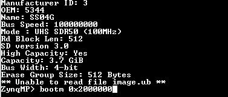
Login into Linux using the following credentials:
Login: root; password: root
Run the Linux Application as described in Design Example 1: Using GPIOs, Timers, and Interrupts
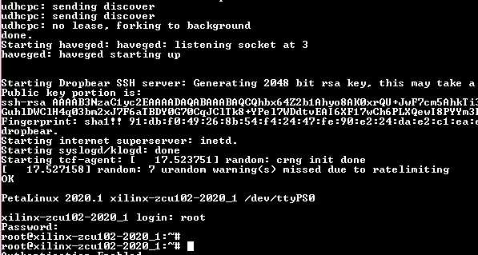
Running the Linux Application¶
Use the following steps to run a Linux application:
Copy the application from SD card mount point to
/tmp.# cp /run/media/mmcblk0p1/ps_pl_linux_app.elf /tmpNote: Mount the SD card manually if you fail to find SD card contents in this location.
# mount /dev/mmcblk0p1 /media/Copy the application to /tmp.
# cp /media/ps_pl_linux_app.elf /tmpRun the application.
# /tmp/ps_pl_linux_app.elf
Sample BIF for a Fielded System¶
The following BIF file is an example for a fielded system. In order for this bif file to work on a board it requires the RSA_EN, PPK0 Digest, black AES key and PUF helper data to all be programmed in the eFUSEs. Because programming these eFUSEs severely limits the use of the device or board for testing and debugging, it is only included here as a reference. It is not part of the tutorial.
The following changes are made to the final generation.bif file reach
the following result:
Change from PUF Bootheader mode to PUF eFUSE mode.
Change the keysrc_encryption attribute to efuse_blk_key.
Remove the bh_keyfile and puf_file lines.
Remove the puf4kmode and pufhd_bh attributes from the fsbl_config line.
Change from boot header authentication to eFUSE authentication. Remove the bh_auth_enable attribute from the fsbl_config line.
//arch = zynqmp; split = false; format = BIN; key_part_name = zcu9eg
the_ROM_image:
{
[pskfile]C:\edt\secure_boot_sd\bootgen_files\psk0.pem
[sskfile]C:\edt\secure_boot_sd\bootgen_files\ssk0.pem
[auth_params]spk_id = 0; ppk_select = 0
[keysrc_encryption]bh_blk_key
[bh_key_iv]black_iv.txt
[bh_keyfile]black_key.txt
[puf_file]helperdata.txt
[fsbl_config]a53_x64, bh_auth_enable, opt_key, puf4kmode,shutter=0x0100005E,pufhd_bh
[bootloader, encryption = aes, authentication = rsa, aeskeyfile = C:\edt\secure_boot_sd\bootgen_files\fsbl_a53.nky, blocks = 1728(*)]C:\edt
\secure_boot_sd\bootgen_files\fsbl_a53.elf
[encryption = aes, authentication = rsa, aeskeyfile = C:\edt\secure_boot_sd\bootgen_files\pmufw.nky, destination_cpu = pmu, blocks =
1728(*)]C:\edt\secure_boot_sd\bootgen_files\pmufw.elf
[encryption = aes, authentication = rsa, aeskeyfile = C:\edt\secure_boot_sd\bootgen_files\edt_zcu102_wrapper.nky, destination_device
= pl, blocks = 1728(*)]C:\edt\secure_boot_sd\bootgen_files
\edt_zcu102_wrapper.bit
[authentication = rsa, destination_cpu = a53-0, exception_level = el-3,trustzone]C:\edt\secure_boot_sd\bootgen_files\bl31.elf
[encryption = aes, authentication = rsa, aeskeyfile = C:\edt\secure_boot_sd\bootgen_files\tmr_psled_r5.nky, destination_cpu = r5-0,
blocks = 1728(*)]C:\edt\secure_boot_sd\bootgen_files\tmr_psled_r5.elf
[authentication = rsa, destination_cpu = a53-0, exception_level = el-2]C:\edt\secure_boot_sd\bootgen_files\u-boot.elf
[authentication = rsa, load = 0x2000000, destination_cpu = a53-0]C:\edt\secure_boot_sd\bootgen_files\image.ub
}